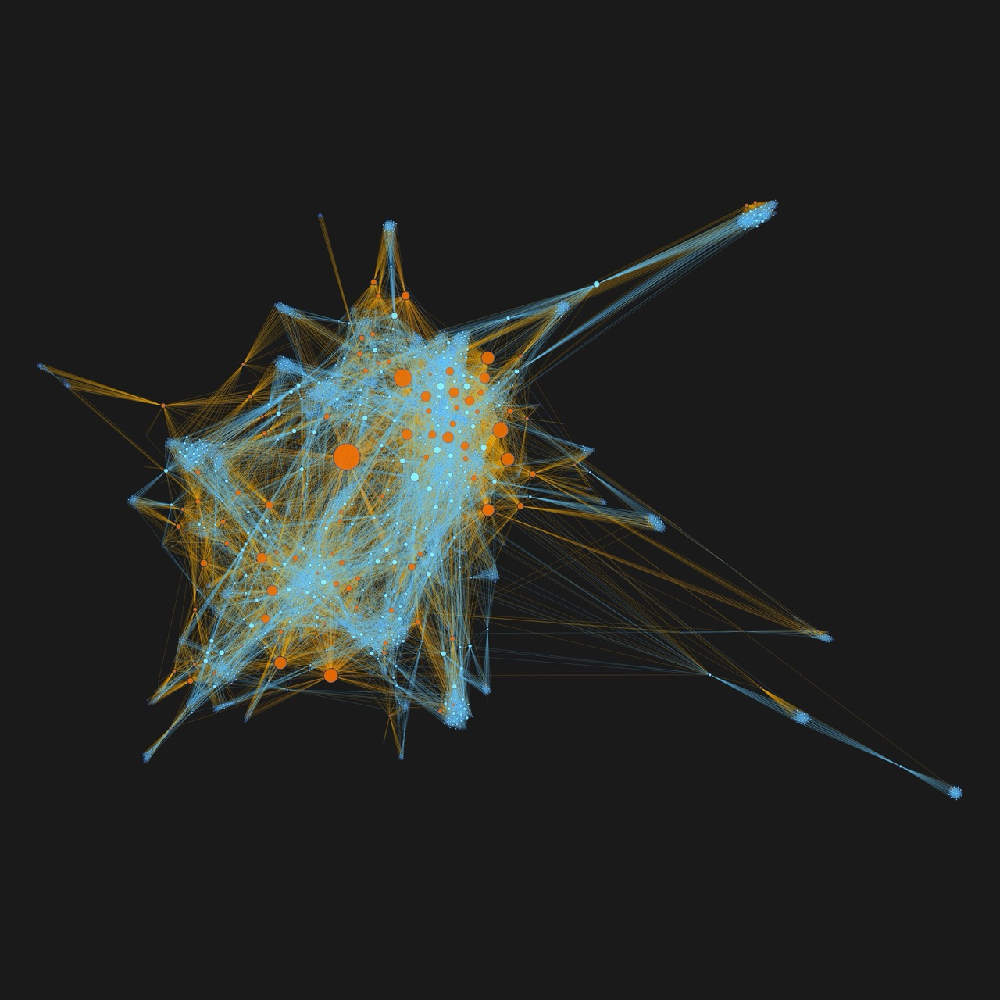
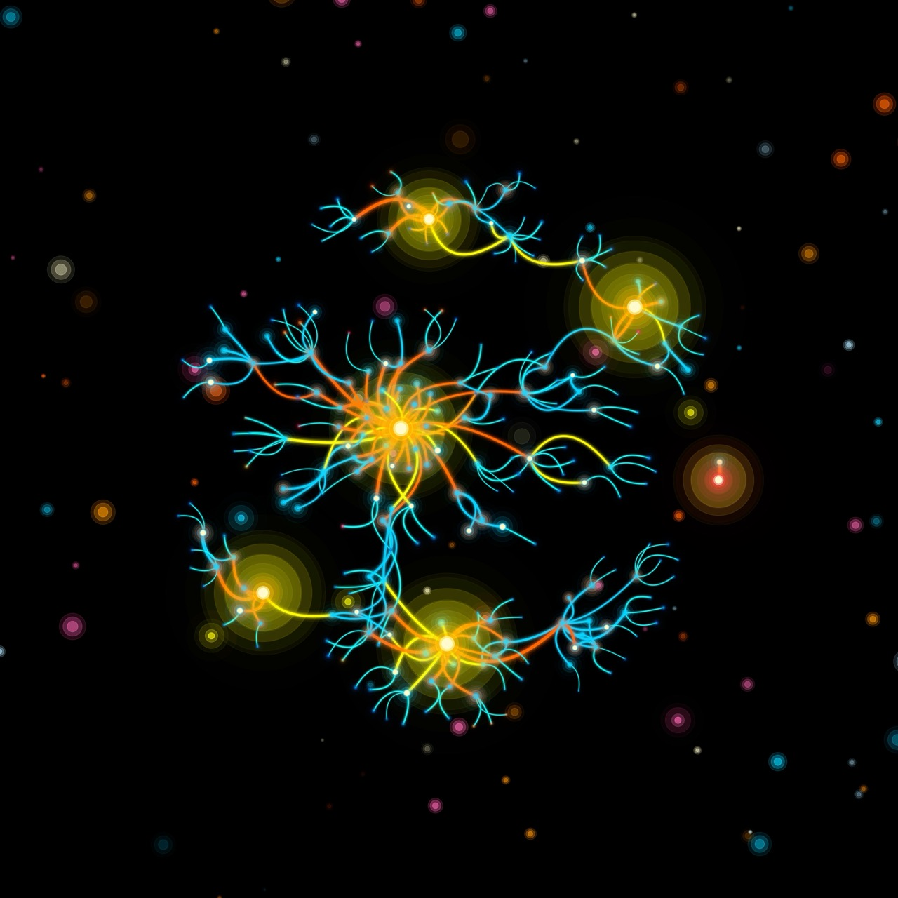
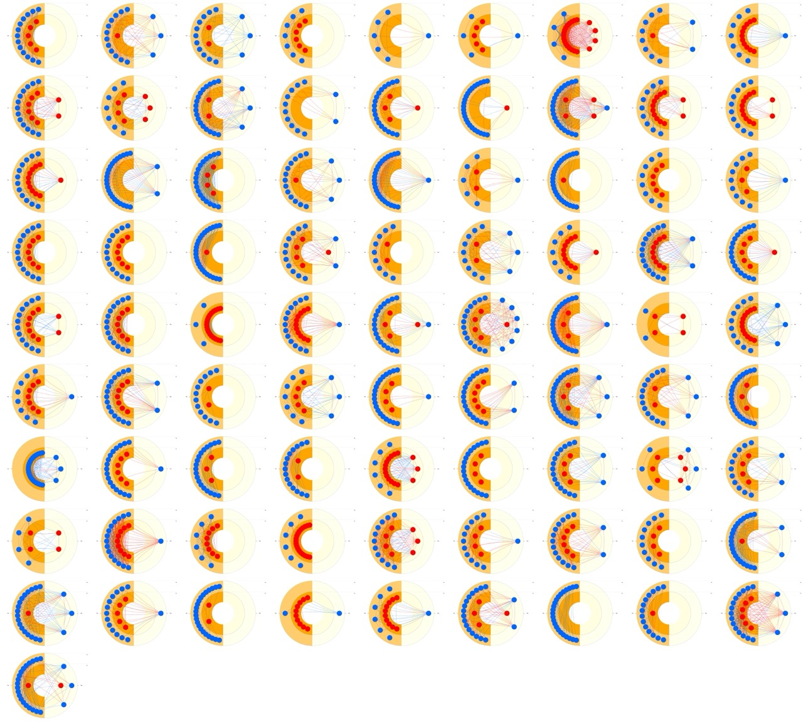
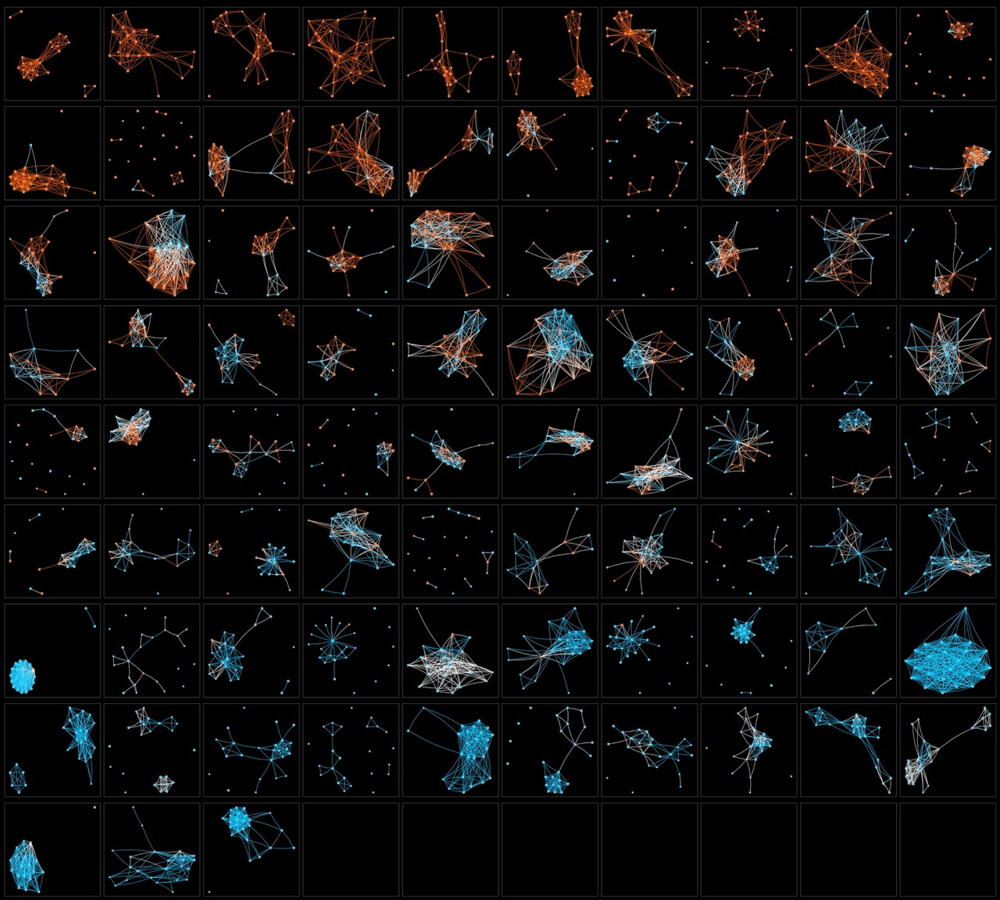
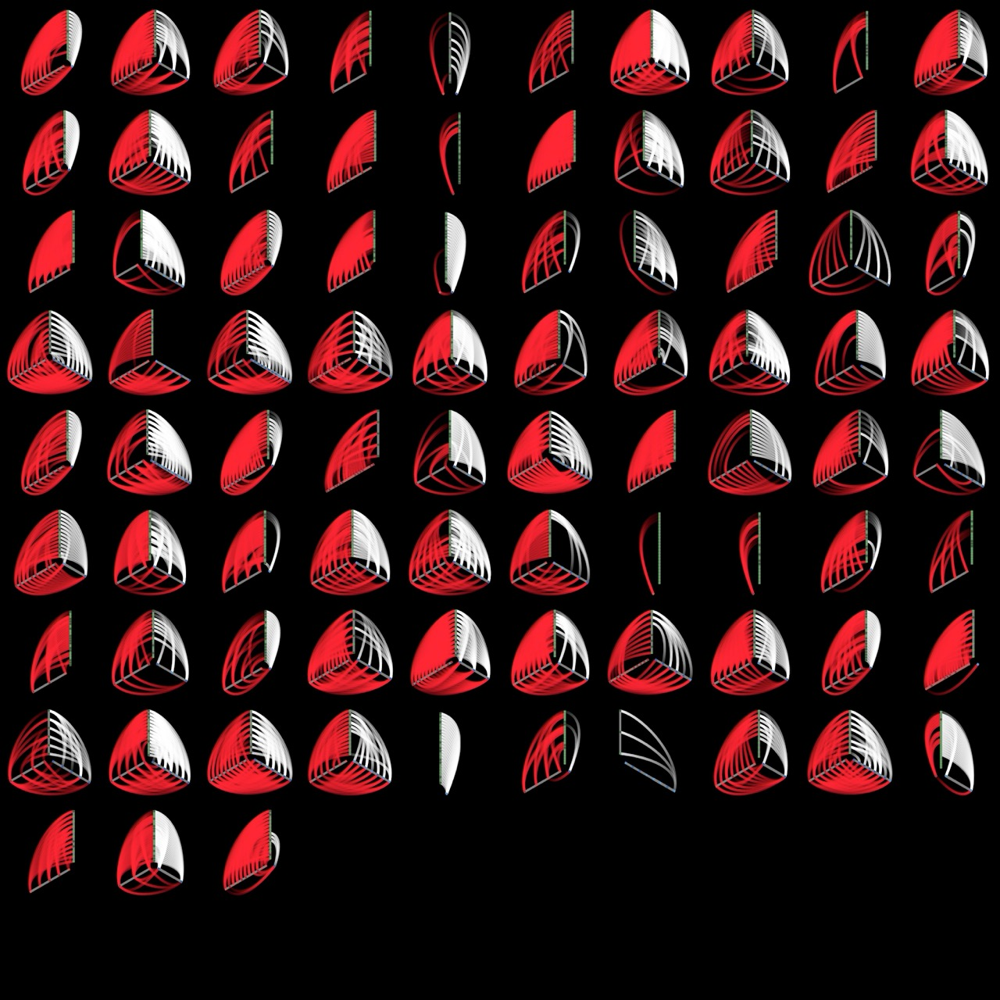
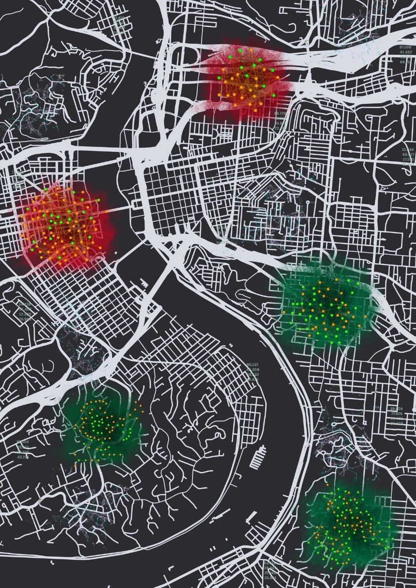
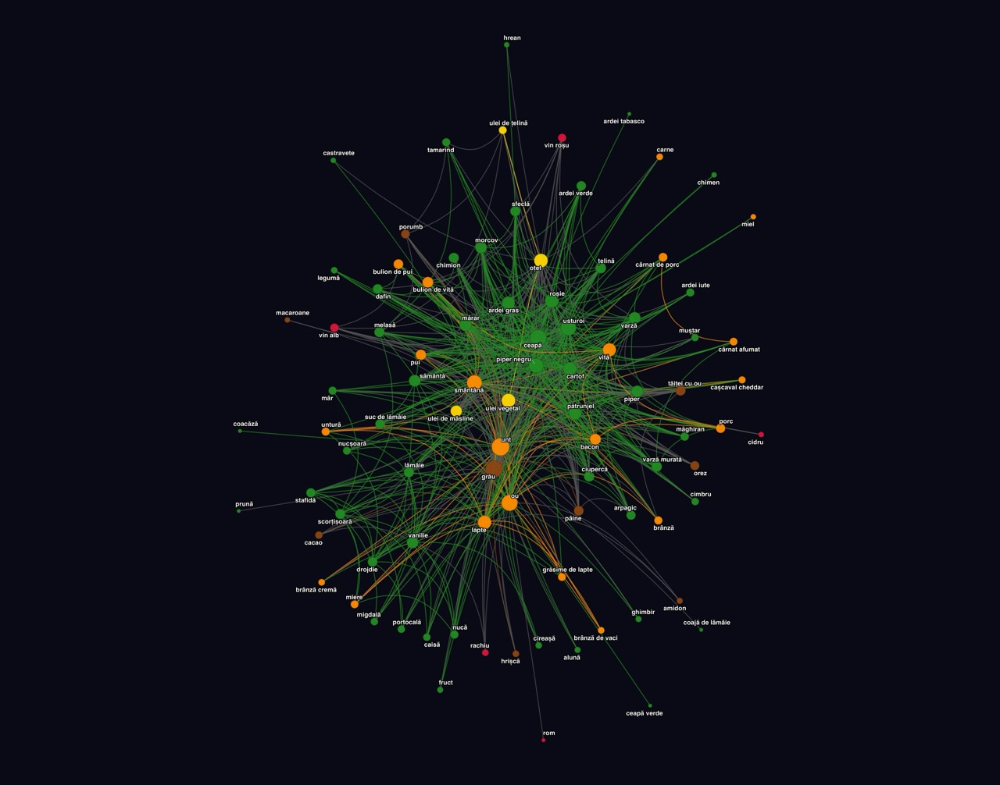

ARTA REȚELELOR
Cum cetățenii, comunitatea și datele schimbă paradigma în prevenția
primară
a cancerului
THE ART OF NETWORKS
How citizens, community, and data are changing the paradigm in
primary
cancer prevention
L'ART DES RÉSEAUX
Comment les citoyens, la communauté et les données transforment le paradigme de la
prévention primaire du cancer
Bine ați venit la Galeria de tablouri Arta rețelelor: Cum cetățenii, comunitatea și datele schimbă paradigma în prevenția primară a cancerului.
Acesta este un spațiu în care arta, comunitatea și cercetarea se întâlnesc. Aici găsiți vizualizări care explorează legăturile sociale, sănătatea și viața de zi cu zi, prezentate ca povești vizuale și cu potențial imersiv. Vizualizările sunt realizate pe bază de date empirice reale culese de la cetățenii localității Lerești (Argeș), în cadrul proiectului 4P-CAN. Fiecare tablou este însoțit de o prezentare care include atât contextul, cât și informațiile tehnice.
Welcome to the Painting Gallery The Art of Networks: How Citizens, Community, and Data Transform the Paradigm of Primary Cancer Prevention.
This is a space where art, community, and research come together. Here you will find visualizations that explore social ties, health, and everyday life, presented as visual stories with immersive potential. The visualizations are based on real empirical data collected from the citizens of Lerești (Argeș) within the 4P-CAN project. Each canvas is accompanied by a presentation that provides both context and technical information.
Bienvenue dans la galerie de tableaux L'Art des réseaux : comment les citoyens, la communauté et les données transforment le paradigme de la prévention primaire du cancer.
C'est un espace où l'art, la communauté et la recherche se rencontrent. Vous y trouverez des visualisations qui explorent les liens sociaux, la santé et la vie quotidienne, présentées comme des récits visuels à potentiel immersif. Les visualisations sont fondées sur des données empiriques réelles recueillies auprès des citoyens de Lerești (Argeș) dans le cadre du projet 4P-CAN. Chaque tableau est accompagné d'une présentation qui fournit à la fois le contexte et les informations techniques.

Textura comunității Community Texture Texture Communautaire
Imaginea intitulată Textura comunității prezintă o parte din rețeaua socială a
localității Lerești fiind formată din 2.378 de persoane și 30.359 de legături. Nodurile
portocalii reprezintă cetățenii care au participat direct la interviuri, iar cele
albastre persoanele menționate de ei. Dimensiunea nodurilor indică gradul de
conectivitate: cu cât un individ are mai multe relații în această rețea, cu atât
capacitatea sa de influență este mai mare. Această pânză arată cum comunitatea
funcționează ca un țesut viu de legături prin care informația, sprijinul și obiceiurile
se transmit. Din perspectiva prevenției primare a cancerului, implicarea cetățenilor
devine esențială: atunci când locuitorii sunt co-autori ai intervențiilor, mesajele de
sănătate se propagă rapid prin canalele naturale ale rețelei, transformând această hartă
socială dintr-o simplă reprezentare vizuală într-un motor de schimbare colectivă și
durabilă.
Oamenii se adună în mod firesc pentru a forma comunități. În societate, depindem unii
de
alții. Atunci când întărim spiritul comunității, facem viața mai bună nu doar pentru
grup în ansamblu, ci și pentru fiecare persoană, prin crearea unor șanse mai mari de
a-și atinge potențialul. O societate cuprinde mereu mai multe tipuri de comunități,
care
coexistă în același timp. Toți trăim într-o rețea de relații sociale: unele le
alegem,
precum oamenii din Lerești care și-au ales compania unii altora, iar altele sunt
modelate de împrejurări, cum este cazul românilor care pleacă la muncă în
străinătate.
În acest țesut invizibil, comunitatea joacă un rol esențial în prevenția primară și
mai
ales în prevenția primară a cancerului, pentru că puterea colectivă de informare,
sprijin și solidaritate poate transforma intențiile individuale în obiceiuri
sănătoase
și durabile.
Pânza intitulată Textura comunității ilustrează o rețea de tip ghem (hairball sau
node-and-line) care include 2,378 de persoane (noduri) și 30,359 relații sociale
(legături) de diverse tipuri. Nodurile colorate cu portocaliu reprezintă 122 de
cetățeni
ai localității Lerești care au participat la cel puțin un interviu în cadrul
studiului
longitudinal de rețea personală. Studiul face parte din activitățile living-lab-ului
Lerești dezvoltat în cadrul proiectului 4P-CAN. Nodurile colorate cu albastru
reprezintă
persoane menționate de către participanții la studiu. Altfel spus, în 266 de
interviuri
derulate în trei momente, 122 de persoane au oferit informații despre 59% din
rezidenții
18+ ai localității Lerești. Mărimea nodurilor este direct proporțională cu numărul
de
legături pe care fiecare persoană le are în cadrul acestei rețele. Legăturile
colorate
în portocaliu marchează legături existente între participanții la studiu sau între
participanți și persoanele nominalizate. Legăturile albastre marchează conexiunile
dintre persoanele nominalizate de către participanți. Altfel spus, Textura
comunității
este o imagine construită pe date reale, culese de la locuitorii Lerești
(Argeș).
Implicarea cetățenilor este cheia activării legăturilor prezentate în cadrul acestei
pânze: când locuitorii devin co-autori ai intervențiilor, informația și sprijinul
circulă mai repede pe canalele naturale ale comunității. Participarea lor transformă
rețeaua dintr-o simplă hartă într-un motor de schimbare sănătoasă durabilă.
Din perspectiva prevenției primare, această pânză arată canalele prin care se pot
disemina eficient informațiile și comportamentele legate de sănătate. Nodurile cu
conectivitate mare (reprezentate prin dimensiuni mai mari) funcționează ca
influențatori
naturali; adică, persoane care, prin poziția lor centrală în comunitate, pot
amplifica
mesajele de sănătate și pot cataliza adoptarea de comportamente de prevenție.
Densitatea
legăturilor arată potențialul de sprijin social disponibil pentru susținerea
schimbărilor de stil de viață, în timp ce diversitatea tipurilor de relații
sugerează
multiple căi prin care se pot transmite cunoștințele și se poate oferi suportul
emoțional necesar pentru menținerea comportamentelor sănătoase pe termen lung.
Înțelegerea acestei arhitecturi sociale permite dezvoltarea de intervenții țintite
care
valorifică influența naturală a liderilor de opinie locali și solidaritatea
comunității
pentru implementarea eficientă a strategiilor de prevenție a cancerului.
The image entitled Community Texture presents part of the social network of Lerești, made
up of 2,378 individuals and 30,359 ties. The orange nodes represent citizens who
participated directly in the interviews, while the blue nodes represent individuals
mentioned by them. The size of the nodes indicates the degree of connectivity: the more
relationships an individual has within this network, the greater their capacity for
influence. This canvas shows how the community functions as a living fabric of ties
through which information, support, and habits circulate. From the perspective of
primary cancer prevention, citizen engagement becomes essential: when residents are
co-authors of interventions, health messages spread quickly through the community's
natural channels, transforming this social map from a simple visual representation into
a driving force for collective and sustainable change.
People naturally come together to form communities. In society, we all depend on one
another. When we strengthen the spirit of community, we make life better not only
for
the group as a whole but also for each person, by creating greater opportunities to
reach their potential. A society always contains many different types of communities
that coexist at the
same
time. We all live within a web of social relationships: some we choose, like the
people
of Lerești choosing each other’s company, while others are shaped by circumstance,
such
as Romanians who go abroad for work. Within this invisible fabric, community plays a
vital role in primary prevention, and especially in the primary prevention of
cancer,
because the collective power of information, support, and solidarity can transform
individual intentions into lasting healthy habits.
The canvas entitled Community Texture illustrates a hair-ball (node-and-line)
type
network including 2,378 individuals (nodes) and 30,359 social relationships
(ties)
of
various kinds. The orange-colored nodes represent 122 citizens of Lerești who
participated in at least one interview within the longitudinal personal network
study.
This research is part of the activities of the Lerești living lab developed
under
the
4P-CAN project. The blue-colored nodes represent individuals mentioned by study
participants. In other words, across 266 interviews conducted in three waves,
122
people
provided information about 59% of Lerești residents aged 18 and over. The size
of
each
node is directly proportional to the number of ties that person has within the
network.
Orange-colored ties mark relationships between participants in the study or
between
participants and the people they nominated. Blue ties represent the connections
among
individuals nominated by participants. In short, Community Texture is an image
built
from real data collected from the residents of Lerești (Argeș).
Citizen engagement is the key to activating the ties displayed in this canvas:
when
residents co-create interventions, information and support flow faster through
the
community’s natural channels. Their participation turns the network from a map
into
a
sustained engine of healthy change.
From the perspective of primary prevention, this canvas highlights the channels
through
which health-related information and behaviors can be effectively disseminated.
Highly
connected nodes (shown as larger in size) act as natural influencers, that is,
individuals who, by their central position in the community, can amplify health
messages
and catalyze the adoption of preventive behaviors. The density of ties indicates
the
potential for social support to sustain lifestyle changes, while the diversity
of
relationship types suggests multiple pathways for transmitting knowledge and
providing
the emotional support necessary to maintain healthy behaviors over the long
term.
Understanding this social architecture allows for the development of targeted
interventions that leverage the natural influence of local opinion leaders and
the
solidarity of the community to implement cancer prevention strategies more
effectively.
L'image intitulée « Texture Communautaire » présente une partie du réseau social de Lerești, composé de 2 378 individus et 30 359 liens. Les nœuds orange représentent les citoyens qui ont participé directement aux entretiens, tandis que les nœuds bleus représentent les individus qu'ils ont mentionnés. La taille des nœuds indique le degré de connectivité : plus un individu a de relations au sein de ce réseau, plus sa capacité d'influence est grande. Cette toile montre comment la communauté fonctionne comme un tissu vivant de liens à travers lequel circulent l'information, le soutien et les habitudes. Du point de vue de la prévention primaire du cancer, l'engagement citoyen devient essentiel : lorsque les résidents sont co-auteurs des interventions, les messages de santé se propagent rapidement par les canaux naturels de la communauté, transformant cette carte sociale d'une simple représentation visuelle en une force motrice pour un changement collectif et durable.
Les gens se rassemblent naturellement pour former des communautés. Dans la société, nous dépendons tous les uns des autres. Lorsque nous renforçons l'esprit de communauté, nous améliorons la vie non seulement pour le groupe dans son ensemble, mais aussi pour chaque personne, en créant de plus grandes opportunités d'atteindre leur potentiel. Une société contient toujours de nombreux types de communautés différents qui coexistent en même temps. Nous vivons tous au sein d'une toile de relations sociales : certaines que nous choisissons, comme les habitants de Lerești qui choisissent leur compagnie mutuelle, tandis que d'autres sont façonnées par les circonstances, comme les Roumains qui partent travailler à l'étranger. Au sein de ce tissu invisible, la communauté joue un rôle vital dans la prévention primaire, et particulièrement dans la prévention primaire du cancer, car le pouvoir collectif de l'information, du soutien et de la solidarité peut transformer les intentions individuelles en habitudes saines et durables.
La toile intitulée « Texture Communautaire » illustre un réseau de type « boule de poils » (nœuds et lignes) comprenant 2 378 individus (nœuds) et 30 359 relations sociales (liens) de diverses natures. Les nœuds de couleur orange représentent 122 citoyens de Lerești qui ont participé à au moins un entretien dans le cadre de l'étude longitudinale sur les réseaux personnels. Cette recherche fait partie des activités du living lab de Lerești développé dans le cadre du projet 4P-CAN. Les nœuds de couleur bleue représentent les individus mentionnés par les participants à l'étude. En d'autres termes, à travers 266 entretiens menés en trois vagues, 122 personnes ont fourni des informations sur 59 % des résidents de Lerești âgés de 18 ans et plus. La taille de chaque nœud est directement proportionnelle au nombre de liens que cette personne possède au sein du réseau. Les liens de couleur orange marquent les relations entre les participants à l'étude ou entre les participants et les personnes qu'ils ont mentionnées. Les liens bleus représentent les connexions entre les individus mentionnés par les participants. En bref, « Texture Communautaire » est une image construite à partir de données réelles collectées auprès des résidents de Lerești (Argeș).
L'engagement citoyen est la clé pour activer les liens affichés sur cette toile : lorsque les résidents co-créent des interventions, l'information et le soutien circulent plus rapidement par les canaux naturels de la communauté. Leur participation transforme le réseau d'une simple carte en un moteur durable de changement sain.
Du point de vue de la prévention primaire, cette toile met en évidence les canaux par lesquels l'information et les comportements liés à la santé peuvent être diffusés efficacement. Les nœuds hautement connectés (représentés par une taille plus grande) agissent comme des influenceurs naturels, c'est-à-dire des individus qui, par leur position centrale dans la communauté, peuvent amplifier les messages de santé et catalyser l'adoption de comportements préventifs. La densité des liens indique le potentiel du soutien social à maintenir les changements de mode de vie, tandis que la diversité des types de relations suggère de multiples voies pour transmettre les connaissances et fournir le soutien émotionnel nécessaire pour maintenir des comportements sains sur le long terme. Comprendre cette architecture sociale permet de développer des interventions ciblées qui tirent parti de l'influence naturelle des leaders d'opinion locaux et de la solidarité de la communauté pour mettre en œuvre plus efficacement les stratégies de prévention du cancer.

Articulații în lumină Reveal the hidden Révéler ce qui est caché
Pânza Articulații în lumină dezvăluie arhitectura ascunsă a legăturilor sociale,
făcând vizibile firele invizibile care conectează oamenii în viața de zi cu zi.
Fiecare nod luminos reprezintă puncte de pornire sau seed-uri din care legăturile se
ramifică în comunitatea Lerești. Liniile vibrante albastre, portocalii și galbene
trasează trasee de interacțiune, arătând cum indivizii sunt legați prin familie,
prietenii și rețele locale. Ceea ce pare o constelație este, de fapt, o hartă vie a
conexiunii: un semnal că obiceiurile de sănătate și cunoașterea circulă prin aceste
legături așa cum lumina circulă prin spațiu. Pentru prevenția cancerului, această
vizualizare arată că a ajunge la indivizi înseamnă, de fapt, a ajunge și la rețelele
lor. Ambasadorii sănătății (seed-urile), aleși cu grijă și legitimați de comunitate,
pot deschide noi rute de influență, transformând conexiunile locale în canale
puternice pentru răspândirea comportamentelor protectoare. Prin implicarea
cetățenilor, aceste articulații de lumină transformă legăturile invizibile în căi
active pentru sănătate, solidaritate și schimbare pe termen lung.
Relațiile sociale sunt prezente în fiecare aspect al vieții noastre, dar rămân
invizibile pentru ochi. Ne mișcăm prin lume înconjurați de legături care ne
conectează
cu familia, prietenii, colegii și chiar cu străinii, dar aceste fire rămân
ascunse
până
când se fac vizibile. Atunci când sunt dezvăluite, ele ilustrează frumusețea
mecanismelor sociale: capacitatea noastră de a mobiliza resurse, de a ne
sprijini
unii
pe alții și de a ajunge la cercuri sociale îndepărtate prin căi surprinzător de
scurte.
Ceea ce rămâne nevăzut în viața de zi cu zi devine, atunci când este vizualizat,
o
hartă
vie a conexiunii umane. În acest țesut al legăturilor sociale, rețelele
personale,
familia și comunitatea devin un aliat esențial în prevenția primară a
cancerului,
prin
forța colectivă de a susține obiceiuri sănătoase și de a răspândi cunoaștere și
sprijin.
Pânza intitulată Articulații în lumină prezintă, într-o formă stilizată,
modalitatea
de
eșantionare prin rețele sociale la nivelul comunității Lerești. Rețeaua
vizualizată
cuprinde 261 de persoane și 298 de legături unice. Procesul de eșantionare a
pornit
de
la șase puncte independente (seeds), reprezentate prin galben electric activat
(seed-uri
care au participat la studiu) și roșu electric activat (seed care nu a
participat la
studiu). Legăturile colorate în nuanțe electrice (portocaliu, galben, albastru
cian)
indică diferite proprietăți structurale ale rețelei. Dintre cele 261 de
persoane,
122 au
participat la cel puțin un interviu în cadrul celor trei valuri, 4 nu au putut
fi
conectate, 12 nu au fost disponibile, 5 au refuzat, iar 118 – deși nominalizate
– nu
au
fost contactate de echipa de cercetare. Altfel spus, Articulații în lumină
prezintă
date
reale de teren din localitatea Lerești (Argeș). Aceste date au fost strânse în
cadrul
unui studiu longitudinal de rețele personale desfășurat în cadrul proiectului
4P-CAN.
Pentru prevenția primară, această vizualizare demonstrează cum se poate accesa și
mobiliza capitalul social al unei comunități prin abordări strategice. Punctele
de
pornire (seeds) ilustrează importanța selectării atente a ambasadorilor
sănătății,
i.e.,
persoane care pot deveni vectori naturali pentru diseminarea informațiilor de
prevenție
și promovarea comportamentelor sănătoase. Diferitele nuanțe ale legăturilor
relevă
diversitatea canalelor de comunicare și influență, sugerând că mesajele de
prevenție
se
pot adapta și transmite prin multiple căi sociale. Participarea variabilă (de la
acceptare la refuz) reflectă realitățile implementării intervențiilor
comunitare,
evidențiind nevoia de strategii personalizate care să respecte dinamica socială
locală.
Această hartă a conexiunilor oferă un cadru practic pentru dezvoltarea
programelor
de
prevenție care valorifică puterile sociale existente, transformând rețelele
naturale
în
instrumente eficiente pentru promovarea sănătății și prevenției cancerului. De
asemenea,
trebuie subliniat că seed-urile funcționează doar dacă sunt alese și susținute
împreună
cu comunitatea. Implicarea cetățenilor legitimează ambasadorii sănătății, crește
încrederea și extinde rapid traseele prin care mesajele de prevenție ajung la
toți.
The canvas Reveal the hidden presents the hidden architecture of social ties, making
visible the invisible threads that connect people in everyday life. Each glowing
node represents starting points, or seeds, from which relationships branch out into
the wider community of Lerești. The vibrant blue, orange, and yellow lines trace
pathways of interaction, showing how individuals are linked through families,
friendships, and local networks. What might appear as a constellation is, in fact, a
living map of connection: a reminder that health behaviors and knowledge travel
through these ties just as light travels through space. For cancer prevention, this
visualization demonstrates that reaching individuals also means reaching their
networks. Carefully chosen health ambassadors, legitimized and supported by the
community, can spark new routes of influence, turning local connections into
powerful channels for spreading protective habits. By engaging citizens directly,
these joints of light transform invisible bonds into active pathways for health,
solidarity, and long-term change.
Social relationships are present in every aspect of our lives, yet they remain
invisible
to the eye. We move through the world surrounded by ties that connect us to
family,
friends, colleagues, and even strangers, but these threads stay hidden until
they
are
revealed. When made visible, they illustrate the beauty of social mechanisms:
our
ability to mobilize resources, to support one another, and to reach distant
social
circles through surprisingly short paths. What remains unseen in daily life
becomes,
when visualized, a living map of human connection. Within this fabric of social
ties,
personal networks, family, and community become essential allies in the primary
prevention of cancer, through the collective power to sustain healthy habits and
to
spread knowledge and support.
The canvas entitled Reveal the hidden, in a stylized form, presents a method of
social
network sampling within the Lerești community. The visualized network comprises
261
individuals and 298 unique ties. The sampling process began with six independent
points
(seeds), represented in activated electric yellow (seeds that participated in
the
study)
and activated electric red (a seed that did not participate in the study). The
ties,
shown in electric shades (orange, yellow, cyan blue), indicate different
structural
properties of the network. Among the 261 individuals, 122 participated in at
least
one
interview across the three waves, 4 could not be connected, 12 were unavailable,
5
refused, and 118—although nominated—were not contacted by the research team. In
other
words, Reveal the hidden presents real field data from the community of Lerești
(Argeș),
collected as part of a longitudinal personal network study supported by the
4P-CAN
project.
From a primary prevention perspective, this visualization demonstrates how the
social
capital of a community can be accessed and mobilized through strategic
approaches.
The
starting points (seeds) illustrate the importance of carefully selecting health
ambassadors, i.e., individuals who can become natural vectors for disseminating
preventive information and promoting healthy behaviors. The different shades of
ties
reveal the diversity of communication and influence channels, suggesting that
prevention
messages can be adapted and transmitted through multiple social pathways.
Variable
participation (from acceptance to refusal) reflects the realities of
implementing
community interventions, highlighting the need for tailored strategies that
respect
local social dynamics. This map of connections provides a practical framework
for
developing prevention programs that use existing social strengths, transforming
natural
relationship networks into effective instruments for health promotion and cancer
prevention. Also, it should be underlined that the seeds work only when selected
and
supported with the community. Citizen engagement legitimizes health ambassadors,
builds
trust, and rapidly extends the paths through which prevention messages reach
everyone.
La toile Révéler ce qui est caché présente l'architecture cachée des liens sociaux, rendant visibles les fils invisibles qui relient les gens dans la vie quotidienne. Chaque nœud lumineux représente des points de départ, ou graines, à partir desquels les relations se ramifient dans la communauté plus large de Lerești. Les lignes vibrantes bleues, orange et jaunes tracent des voies d'interaction, montrant comment les individus sont liés par les familles, les amitiés et les réseaux locaux. Ce qui pourrait ressembler à une constellation est, en fait, une carte vivante de connexions : un rappel que les comportements de santé et les connaissances voyagent à travers ces liens tout comme la lumière voyage à travers l'espace. Pour la prévention du cancer, cette visualisation démontre qu'atteindre les individus signifie également atteindre leurs réseaux. Des ambassadeurs de la santé soigneusement choisis, légitimés et soutenus par la communauté, peuvent déclencher de nouvelles voies d'influence, transformant les connexions locales en canaux puissants pour la diffusion d'habitudes protectrices. En engageant directement les citoyens, ces jointures de lumière transforment les liens invisibles en voies actives pour la santé, la solidarité et un changement à long terme.
Les relations sociales sont présentes dans chaque aspect de nos vies, pourtant elles restent invisibles à l'œil nu. Nous évoluons dans le monde entourés de liens qui nous connectent à la famille, aux amis, aux collègues et même à des étrangers, mais ces fils restent cachés jusqu'à ce qu'ils soient révélés. Lorsqu'ils sont rendus visibles, ils illustrent la beauté des mécanismes sociaux : notre capacité à mobiliser des ressources, à nous soutenir mutuellement et à atteindre des cercles sociaux éloignés par des chemins étonnamment courts. Ce qui reste invisible dans la vie quotidienne devient, une fois visualisé, une carte vivante de la connexion humaine. Au sein de ce tissu de liens sociaux, les réseaux personnels, la famille et la communauté deviennent des alliés essentiels dans la prévention primaire du cancer, grâce au pouvoir collectif de maintenir des habitudes saines et de diffuser les connaissances et le soutien.
La toile intitulée Révéler ce qui est caché, sous une forme stylisée, présente une méthode d'échantillonnage de réseau social au sein de la communauté de Lerești. Le réseau visualisé comprend 261 individus et 298 liens uniques. Le processus d'échantillonnage a commencé avec six points indépendants (graines), représentés en jaune électrique activé (graines ayant participé à l'étude) et en rouge électrique activé (une graine n'ayant pas participé à l'étude). Les liens, montrés dans des teintes électriques (orange, jaune, bleu cyan), indiquent différentes propriétés structurelles du réseau. Parmi les 261 individus, 122 ont participé à au moins un entretien à travers les trois vagues, 4 n'ont pas pu être joints, 12 étaient indisponibles, 5 ont refusé, et 118 — bien que mentionnés — n'ont pas été contactés par l'équipe de recherche. En d'autres termes, Révéler ce qui est caché présente de véritables données de terrain de la communauté de Lerești (Argeș), collectées dans le cadre d'une étude longitudinale sur les réseaux personnels soutenue par le projet 4P-CAN.
Du point de vue de la prévention primaire, cette visualisation démontre comment le capital social d'une communauté peut être accessible et mobilisé grâce à des approches stratégiques. Les points de départ (graines) illustrent l'importance de sélectionner soigneusement les ambassadeurs de la santé, c'est-à-dire les individus qui peuvent devenir des vecteurs naturels pour diffuser l'information préventive et promouvoir des comportements sains. Les différentes nuances de liens révèlent la diversité des canaux de communication et d'influence, suggérant que les messages de prévention peuvent être adaptés et transmis à travers de multiples voies sociales. La participation variable (de l'acceptation au refus) reflète les réalités de la mise en œuvre d'interventions communautaires, soulignant la nécessité de stratégies sur mesure qui respectent les dynamiques sociales locales. Cette carte de connexions fournit un cadre pratique pour le développement de programmes de prévention qui utilisent les forces sociales existantes, transformant les réseaux de relations naturels en instruments efficaces pour la promotion de la santé et la prévention du cancer. De plus, il convient de souligner que les graines ne fonctionnent que lorsqu'elles sont sélectionnées et soutenues avec la communauté. L'engagement citoyen légitime les ambassadeurs de la santé, renforce la confiance et étend rapidement les chemins par lesquels les messages de prévention parviennent à tous.

Picătura de viață Inoculation Inoculation
Tabloul Picătura de viață reunește 82 de ego-grame care arată cum deciziile de
vaccinare se conturează în cercurile apropiate de familie și prieteni. Fiecare
diagramă prezintă legăturile emoționale cele mai puternice ale unui respondent din
Lerești: jumătatea portocalie indică persoanele din afara gospodăriei, iar cea
galben-deschis pe cele din interior. Nodurile roșii reprezintă persoane percepute ca
nevaccinate, iar cele albastre persoane vaccinate, conectate prin legături roșii
(foarte apropiate) sau albastre (mai slabe). Privite împreună, imaginile arată cum
deciziile de sănătate nu apar la întâmplare, ci se grupează în insule familiale și
sociale, unde comportamentele tind să fie comune. Această vizualizare subliniază un
principiu esențial: sănătatea se propagă prin proximitate emoțională, nu doar prin
informare. De aceea, prevenția eficientă, fie că vorbim despre vaccinare sau despre
reducerea riscului de cancer, necesită implicarea familiilor și a comunităților.
Atunci când vocea cetățenilor este integrată și cei apropiați sunt mobilizați,
mesajele de sănătate capătă greutate și devin parte a realității cotidiene.
Deciziile de vaccinare nu se iau în izolare, ci în inima familiei. Valorile
legate
de
sănătate sunt fire nevăzute, țesute și negociate între oamenii importanți din
viața
noastră. De aceea, alegerile pro- sau anti-vaccinare nu se risipesc la
întâmplare în
societate, ci se adună în insule și constelații de legături. Intervențiile care
privesc
vaccinarea trebuie să atingă nu doar individul, ci și țesătura mai largă a
familiei
și a
rețelelor sale apropiate.
Pânza intitulată Picătura de viață reunește 82 de ego-grame (imagini). Fiecare
imagine
arată contactele sociale cele mai apropiate emoțional ale unei persoane și modul
în
care
comportamentul de vaccinare se organizează în cercuri sociale. Altfel spus,
fiecare
ego-gramă corespunde unui număr de 82 de respondenți intervievați în primul val
al
studiului longitudinal de rețele sociale realizat în cadrul proiectului 4P-CAN.
Fiecare
plăcintă este împărțită în două: jumătatea portocalie indică persoane din afara
gospodăriei, iar cea galben-deschis persoane din aceeași gospodărie cu
respondentul.
Nodurile roșii marchează persoane despre care respondentul crede că nu s-au
vaccinat,
iar nodurile albastre persoane despre care știe că s-au vaccinat. Legăturile
roșii
conectează persoane considerate foarte apropiate, în timp ce cele albastre
semnalează o
apropiere mai redusă. Privite împreună, cele 82 de imagini dezvăluie tipare de
percepție: de exemplu, tendința membrilor aceleiași gospodării de a fi raportați
cu
același comportament de vaccinare.
Pentru prevenția primară a cancerului, această colecție de rețele personale
ilustrează
principiul fundamental că sănătatea se propagă prin proximitatea emoțională, nu
prin
simpla informare. Gruparea observată în deciziile de vaccinare se aplică și
comportamentelor de prevenție ale cancerului, de la adoptarea unei alimentații
sănătoase
și renunțarea la fumat, până la participarea la screeninguri regulate.
Intensitatea
legăturilor (roșu vs. albastru) sugerează că persoanele cu care avem relații
foarte
strânse exercită o influență disproporționată asupra alegerilor noastre de
sănătate.
Organizarea comportamentelor în insule familiale și sociale sugerează că
intervențiile
de prevenție primară a cancerului trebuie să vizeze nu doar individul, ci
ecosistemul
relațional în care acesta ia decizii. Această perspectivă permite dezvoltarea de
strategii care mobilizează influența pozitivă a rețelelor apropiate pentru a
susține
și
consolida adoptarea pe termen lung a stilurilor de viață care reduc riscul de
cancer.
Pentru că deciziile se iau în familie și în cercurile apropiate, intervențiile
reușesc
când îi implică pe cei de lângă noi, părinți, bunici, prieteni. Vocea
cetățenilor dă
nuanță mesajelor și le ancorează în realitatea afectivă a rețelelor
personale.
The Inoculation canvas brings together 82 ego-grams that show how vaccination
decisions take shape within close circles of family and friends. Each diagram
depicts the strongest emotional ties of a respondent from Lerești: the orange half
indicates people outside the household, while the light-yellow half shows those
inside it. Red nodes represent individuals perceived as unvaccinated, while blue
nodes represent vaccinated individuals, connected by red ties (very close) or blue
ties (weaker closeness). Viewed together, the images reveal that health decisions do
not occur randomly but cluster within family and social islands, where behaviors
tend to be shared. This visualization highlights an essential principle: health
spreads through emotional closeness, not just information. That is why effective
prevention, whether for vaccination or cancer risk reduction, requires the
involvement of families and communities. When citizens’ voices are integrated and
close ties are mobilized, health messages gain weight and become part of everyday
reality.
Vaccination decisions are not made in isolation, but in the heart of the family.
Health
values are invisible threads, woven and negotiated among the important people in
our
lives. That is why pro- or anti-vaccination choices do not scatter randomly
across
society, but gather in islands and constellations of ties. Interventions related
to
vaccination must address not only the individual but also the wider fabric of
family
and
close networks.
The canvas entitled Inoculation brings together 82 ego-grams (images). Each image shows a person’s closest emotional social contacts and the way vaccination behavior is organized within social circles. In other words, each ego-gram corresponds to one of the 82 respondents interviewed in the first wave of the longitudinal social network study. Each pie is divided in two: the orange half represents people outside the household, while the light-yellow half represents people within the respondent’s household. Red nodes mark individuals the respondent believes are not vaccinated, while blue nodes represent individuals known to be vaccinated. Red ties connect people considered very close, while blue ties indicate weaker closeness. Viewed together, the 82 images reveal perception patterns; for example, the tendency of household members to be reported as having the same vaccination behavior. The Inoculation canvas represents a collage of real data collected in the community of Lerești (Argeș) during the first wave of the longitudinal personal network study carried out within the 4P-CAN project.
For primary cancer prevention, this collection of personal networks illustrates
the
fundamental principle that health behaviors spread through emotional closeness,
not
mere
information. The clustering patterns observed in vaccination decisions also
apply to
cancer-preventive behaviors, e.g., from adopting a healthy diet and quitting
smoking
to
participating in regular screenings. The intensity of ties (red vs. blue)
suggests
that
those with whom we share the closest relationships exert a disproportionate
influence on
our health choices. The organization of behaviors into family and social
clusters
indicates that primary cancer prevention interventions must target not only the
individual but also the relational ecosystem in which decisions are made. This
perspective enables the development of strategies that mobilize the positive
influence
of close networks to support and strengthen the long-term adoption of lifestyles
that
reduce cancer risk. Additionally, as decisions are made within families and
close
circles, interventions succeed when they engage those around us, parents,
grandparents
and friends. Citizen voices nuance the messages and anchor them in the emotional
reality
of personal networks.
La toile Inoculation rassemble 82 égo-grammes qui montrent comment les décisions de vaccination prennent forme au sein des cercles restreints de la famille et des amis. Chaque diagramme décrit les liens émotionnels les plus forts d'un répondant de Lerești : la moitié orange indique les personnes extérieures au foyer, tandis que la moitié jaune clair montre celles qui se trouvent à l'intérieur. Les nœuds rouges représentent les individus perçus comme non vaccinés, tandis que les nœuds bleus représentent les individus vaccinés, reliés par des liens rouges (très proches) ou des liens bleus (proximité plus faible). Vues ensemble, les images révèlent que les décisions de santé ne se produisent pas au hasard, mais se regroupent au sein d'îlots familiaux et sociaux, où les comportements ont tendance à être partagés. Cette visualisation met en évidence un principe essentiel : la santé se propage par la proximité émotionnelle, et pas seulement par l'information. C'est pourquoi une prévention efficace, que ce soit pour la vaccination ou la réduction du risque de cancer, nécessite l'implication des familles et des communautés. Lorsque les voix des citoyens sont intégrées et que les liens étroits sont mobilisés, les messages de santé gagnent en poids et font partie de la réalité quotidienne.
Les décisions de vaccination ne se prennent pas de manière isolée, mais au cœur de la famille. Les valeurs de santé sont des fils invisibles, tissés et négociés entre les personnes importantes de nos vies. C'est pourquoi les choix pro- ou anti-vaccination ne s'éparpillent pas au hasard dans la société, mais se rassemblent en îlots et en constellations de liens. Les interventions liées à la vaccination doivent s'adresser non seulement à l'individu, mais aussi au tissu plus large de la famille et des réseaux proches.
La toile intitulée Inoculation rassemble 82 égo-grammes (images). Chaque image montre les contacts sociaux émotionnels les plus proches d'une personne et la manière dont le comportement de vaccination s'organise au sein des cercles sociaux. En d'autres termes, chaque égo-gramme correspond à l'un des 82 répondants interrogés lors de la première vague de l'étude longitudinale sur les réseaux sociaux. Chaque camembert est divisé en deux : la moitié orange représente les personnes extérieures au foyer, tandis que la moitié jaune clair représente les personnes au sein du foyer du répondant. Les nœuds rouges marquent les individus que le répondant pense ne pas être vaccinés, tandis que les nœuds bleus représentent les individus connus pour être vaccinés. Les liens rouges relient les personnes considérées comme très proches, tandis que les liens bleus indiquent une proximité plus faible. Vues ensemble, les 82 images révèlent des modèles de perception ; par exemple, la tendance des membres d'un même foyer à être signalés comme ayant le même comportement de vaccination. La toile Inoculation représente un collage de données réelles collectées dans la communauté de Lerești (Argeș) au cours de la première vague de l'étude longitudinale sur les réseaux personnels menée dans le cadre du projet 4P-CAN.
Pour la prévention primaire du cancer, cette collection de réseaux personnels illustre le principe fondamental selon lequel les comportements de santé se propagent par la proximité émotionnelle, et non par la simple information. Les modèles de regroupement observés dans les décisions de vaccination s'appliquent également aux comportements de prévention du cancer, par exemple, de l'adoption d'une alimentation saine et de l'arrêt du tabac jusqu'à la participation à des dépistages réguliers. L'intensité des liens (rouge contre bleu) suggère que ceux avec qui nous partageons les relations les plus étroites exercent une influence disproportionnée sur nos choix de santé. L'organisation des comportements en groupes familiaux et sociaux indique que les interventions de prévention primaire du cancer doivent cibler non seulement l'individu, mais aussi l'écosystème relationnel dans lequel les décisions sont prises. Cette perspective permet le développement de stratégies qui mobilisent l'influence positive des réseaux proches pour soutenir et renforcer l'adoption à long terme de modes de vie qui réduisent le risque de cancer. De plus, comme les décisions sont prises au sein des familles et des cercles proches, les interventions réussissent lorsqu'elles impliquent notre entourage, nos parents, nos grands-parents et nos amis. Les voix des citoyens nuancent les messages et les ancrent dans la réalité émotionnelle des réseaux personnels.

Galaxia nutriției Nutrition panoply Panoplie nutritionnelle
Pânza cu numele Galaxia nutriției arată cum obiceiurile alimentare sunt adânc
înrădăcinate în țesătura socială a vieții de zi cu zi. Fiecare rețea reprezintă
contactele sociale apropiate ale câte unui respondent din Lerești, cu noduri
portocalii
pentru persoanele care consumă frecvent alimente procesate sărate și noduri albastre
pentru cei care le consumă mai rar. Ceea ce vedem nu sunt doar alegeri individuale,
ci
felul în care comportamentele alimentare se grupează și se răspândesc în familii și
cercuri de prieteni. Rețelele dominate de portocaliu dezvăluie medii unde
alimentația
nesănătoasă este normalizată și întărită, în timp ce rețelele predominant albastre
evidențiază contexte mai sănătoase. Rețelele mixte arată atât tensiuni, cât și
oportunități, unde influența pozitivă poate cataliza schimbarea către diete mai
protectoare. Din perspectiva prevenției cancerului, imaginea ne amintește că
schimbarea
nutrițională nu este doar o chestiune individuală, ci una colectivă, care necesită
implicarea cetățenilor. Prin colaborarea cu grupurile care iau masa împreună și
împărtășesc obiceiuri zilnice, comunitățile pot transforma masa comună într-un
spațiu al
schimbării, unde practicile sănătoase prind rădăcini și se răspândesc prin puterea
legăturilor sociale.
Pânza intitulată Galaxia nutriției oferă o poveste vizuală a 83 de respondenți
din
primul val al studiului longitudinal de rețele personale desfășurat în
localitatea
Lerești (Argeș), în cadrul proiectului 4P-CAN. Fiecare rețea arată modul în care
contactele sociale ale respondenților interacționează, legăturile reprezentând
un
grad
ridicat de apropiere emoțională. Nodurile portocalii indică persoane care
consumă
frecvent (zilnic sau săptămânal) alimente procesate cu conținut ridicat de sare,
iar
nodurile albastre persoane care consumă mai rar aceste alimente. Rețelele sunt
ordonate
de la cea mai mare la cea mai mică concentrare de consumatori de produse
procesate.
Pânza evidențiază puternice efecte de similaritate: de regulă, respondenții care
consumă
frecvent astfel de alimente sunt înconjurați de prieteni și membri ai familiei
cu
obiceiuri similare, deși în unele cazuri apar și amestecuri de preferințe
alimentare.
Din perspectiva prevenției primare a cancerului, această colecție de rețele
ilustrează
un principiu fundamental: obiceiurile alimentare care reduc riscul de cancer se
consolidează și se mențin prin efectul de grup. Tranziția vizuală de la rețelele
predominant portocalii (consum ridicat de alimente procesate) la cele albastre
(consum
redus) sugerează că schimbarea alimentară nu este un proces individual, ci unul
colectiv
care se răspândește prin proximitate socială. Gruparea comportamentelor
alimentare
demonstrează că intervențiile de nutriție au șanse mai mari de succes când
vizează
grupuri sociale coezive, nu indivizi in izolare. Rețelele mixte
(portocaliu-albastru)
identifică punctele de tensiune și oportunitate, unde influența pozitivă poate
cataliza
schimbarea către diete bogate în antioxidanți, fibre și nutrienți protectivi.
Această
perspectivă permite dezvoltarea de strategii care valorifică puterea ritualista
a
mesei
comune pentru a promova alimentația ca instrument de prevenție a cancerului la
nivelul
familiilor și comunităților apropiate. De asemenea, schimbarea alimentară prinde
rădăcini când este co-gândită cu grupurile care mănâncă împreună. Implicarea
cetățenilor
ajută la identificarea mesei comune ca spațiu de intervenție și la propagarea
obiceiurilor sănătoase prin efectul de grup.
The canvas entitled Nutrition panoply shows how eating habits are deeply rooted in
the social fabric of everyday life. Each network represents the close social
contacts of a respondent from Lerești, with orange nodes for people who frequently
consume salty processed foods and blue nodes for those who consume them less often.
What we see are not just individual choices, but the way eating behaviors cluster
and spread within families and circles of friends. Networks dominated by orange
reveal environments where unhealthy diets are normalized and reinforced, while
predominantly blue networks highlight healthier contexts. Mixed networks reveal both
tensions and opportunities, where positive influence can catalyze a shift toward
more protective diets. From the perspective of cancer prevention, the image reminds
us that nutritional change is not only an individual matter but a collective one
that requires citizen engagement. By collaborating with groups who share meals and
daily habits, communities can transform the shared table into a space of change,
where healthy practices take root and spread through the power of social
ties.
Food is not just an individual act, but a collective ritual. It functions as one
of
the
strongest social institutions: bringing people together, building bridges of
trust,
and
weaving subtle threads of intimacy. Around the table, people influence one
another,
share secrets, and over time come to share common and enduring eating habits.
Tastes
are
passed on, mixed, and borrowed until they become a shared heritage of friends
and
families. That is why changing the way one person eats inevitably means changing
the
way
their friends and close ones eat as well. Any intervention, e.g., whether aimed
at
reducing salt intake or adopting other healthy practices, must address not only
the
individual but also the close community in which they are embedded.
Collective feeding systems, such as school or corporate canteens, are
particularly
important for this very reason. Any change in a canteen's menu can quickly
spread
within the community of those who eat there and propagate to their family or
friend
networks. In the long run, these changes can prove much more effective than any
individual information or education campaigns. Family and friend networks offer
any
healthy eating promotion strategy a unique opportunity for social transformation
and, ultimately, for transforming population health.
The canvas entitled Nutrition panoply presents a visual story of 83 respondents
from
the
first wave of the longitudinal personal network study conducted in the community
of
Lerești (Argeș), within the 4P-CAN project. Each network shows how respondents’
social
contacts interact, with ties representing a high degree of perceived emotional
closeness. Orange nodes indicate people who frequently (daily or weekly) consume
processed foods high in salt, while blue nodes indicate those who consume such
foods
more rarely. The networks are arranged from the highest to the lowest
concentration
of
processed food consumers. The canvas highlights strong similarity effects:
typically,
respondents who frequently consume these foods are surrounded by friends and
family
members with similar habits, although in some cases mixed dietary preferences
also
appear.
From a primary cancer prevention perspective, this collection of networks
illustrates
a
fundamental principle: food habits that reduce cancer risk are strengthened and
sustained through group effects. The visual transition from predominantly orange
networks (high consumption of processed foods) to blue networks (low
consumption)
suggests that dietary change is not an individual process, but a collective one
that
spreads through social proximity. The clustering of food behaviors demonstrates
that
preventive nutrition interventions are more likely to succeed when targeting
cohesive
social groups rather than individuals in isolation. Mixed networks (orange-blue)
identify points of tension and opportunity, where positive influence can
catalyze
shifts
toward diets rich in antioxidants, fiber, and protective nutrients. This
perspective
enables the development of strategies that harness the ritualistic power of the
shared
meal to promote nutrition as a tool for cancer prevention within families and
close
communities. Also, dietary change takes root when co-designed with the groups
who
eat
together. Citizen engagement helps identify the shared table as an intervention
space
and spreads healthy habits through group effects.
La toile intitulée Panoplie nutritionnelle montre comment les habitudes alimentaires sont profondément ancrées dans le tissu social de la vie quotidienne. Chaque réseau représente les contacts sociaux proches d'un répondant de Lerești, avec des nœuds orange pour les personnes qui consomment fréquemment des aliments transformés salés et des nœuds bleus pour celles qui en consomment moins souvent. Ce que nous voyons ne sont pas seulement des choix individuels, mais la façon dont les comportements alimentaires se regroupent et se propagent au sein des familles et des cercles d'amis. Les réseaux dominés par l'orange révèlent des environnements où les régimes alimentaires malsains sont normalisés et renforcés, tandis que les réseaux à prédominance bleue mettent en évidence des contextes plus sains. Les réseaux mixtes révèlent à la fois des tensions et des opportunités, où une influence positive peut catalyser un changement vers des régimes plus protecteurs. Du point de vue de la prévention du cancer, l'image nous rappelle que le changement nutritionnel n'est pas seulement une question individuelle mais collective, qui nécessite l'engagement des citoyens. En collaborant avec des groupes qui partagent des repas et des habitudes quotidiennes, les communautés peuvent transformer la table partagée en un espace de changement, où les pratiques saines s'enracinent et se propagent grâce au pouvoir des liens sociaux.
L'alimentation n'est pas seulement un acte individuel, mais un rituel collectif. Elle fonctionne comme l'une des institutions sociales les plus fortes : rassemblant les gens, jetant des ponts de confiance et tissant des fils subtils d'intimité. Autour de la table, les gens s'influencent mutuellement, partagent des secrets et, au fil du temps, en viennent à partager des habitudes alimentaires communes et durables. Les goûts se transmettent, se mélangent et s'empruntent jusqu'à devenir un héritage partagé entre amis et familles. C'est pourquoi changer la façon dont une personne mange signifie inévitablement changer la façon dont ses amis et ses proches mangent également. Toute intervention, par exemple, qu'elle vise à réduire l'apport en sel ou à adopter d'autres pratiques saines, doit s'adresser non seulement à l'individu, mais aussi à la communauté proche dans laquelle il est inséré.
Les systèmes de restauration collective, tels que les cantines scolaires ou d'entreprise, sont particulièrement importants pour cette même raison. Tout changement dans le menu d'une cantine peut se propager rapidement au sein de la communauté de ceux qui y mangent et s'étendre à leurs réseaux familiaux ou amicaux. À long terme, ces changements peuvent s'avérer bien plus efficaces que n'importe quelle campagne individuelle d'information ou d'éducation. Les réseaux familiaux et amicaux offrent à toute stratégie de promotion de l'alimentation saine une opportunité unique de transformation sociale et, en fin de compte, de transformation de la santé de la population.
La toile intitulée Panoplie nutritionnelle présente l'histoire visuelle de 83 répondants de la première vague de l'étude longitudinale sur les réseaux personnels menée dans la communauté de Lerești (Argeș), dans le cadre du projet 4P-CAN. Chaque réseau montre comment les contacts sociaux des répondants interagissent, les liens représentant un degré élevé de proximité émotionnelle perçue. Les nœuds orange indiquent les personnes qui consomment fréquemment (quotidiennement ou hebdomadairement) des aliments transformés riches en sel, tandis que les nœuds bleus indiquent celles qui consomment ces aliments plus rarement. Les réseaux sont disposés de la plus forte à la plus faible concentration de consommateurs d'aliments transformés. La toile met en évidence de forts effets de similarité : généralement, les répondants qui consomment fréquemment ces aliments sont entourés d'amis et de membres de leur famille ayant des habitudes similaires, bien que dans certains cas, des préférences alimentaires mixtes apparaissent également.
Du point de vue de la prévention primaire du cancer, cette collection de réseaux illustre un principe fondamental : les habitudes alimentaires qui réduisent le risque de cancer sont renforcées et maintenues par des effets de groupe. La transition visuelle des réseaux à prédominance orange (forte consommation d'aliments transformés) aux réseaux bleus (faible consommation) suggère que le changement alimentaire n'est pas un processus individuel, mais un processus collectif qui se propage par la proximité sociale. Le regroupement des comportements alimentaires démontre que les interventions de nutrition préventive ont plus de chances de réussir lorsqu'elles ciblent des groupes sociaux cohésifs plutôt que des individus isolés. Les réseaux mixtes (orange-bleu) identifient des points de tension et d'opportunité, où une influence positive peut catalyser des changements vers des régimes riches en antioxydants, en fibres et en nutriments protecteurs. Cette perspective permet le développement de stratégies qui exploitent le pouvoir rituel du repas partagé pour promouvoir la nutrition en tant qu'outil de prévention du cancer au sein des familles et des communautés proches. De plus, le changement alimentaire s'enracine lorsqu'il est co-conçu avec les groupes qui mangent ensemble. L'engagement citoyen aide à identifier la table partagée comme un espace d'intervention et diffuse des habitudes saines grâce aux effets de groupe.

Fire de fum Ties in smoke Liens dans la fumée
Pânza intitulată Fire de fum arată cum fumatul este adânc înrădăcinat în țesătura
socială a vieții de zi cu zi. Fiecare imagine reprezintă contactele apropiate ale
câte
unui respondent din Lerești, organizate după statutul de fumat: roșu pentru
fumători,
albastru pentru foști fumători și verde pentru nefumători. Liniile roșii leagă
fumătorii
de celelalte grupuri. Ceea ce vedem nu sunt doar alegeri individuale izolate, ci
felul
în care comportamentele de fumat circulă prin rețele de prieteni, familie și
cunoscuți.
Grupurile dense de legături roșii dezvăluie medii unde fumatul este normalizat și
întărit. Acolo unde liniile roșii sunt mai rare sau lipsesc putem aștepta contexte
în
care fumatul este mai degrabă izolat social. Din perspectiva prevenției cancerului,
aceste tipare arată că renunțarea la fumat nu ține doar de voința individuală, ci și
de
influența colectivă. Implicarea comunităților (nefumători, foști fumători și lideri
informali) creează ecosisteme protectoare unde normele sănătoase se răspândesc,
demonstrând că legăturile sociale pot fi aliați puternici în reducerea riscurilor
asociate tutunului.
Fumatul nu este doar un gest individual, ci un ritual social care leagă și
desparte
în
același timp. Țigara aprinsă devine pretext de întâlnire, de conversație, de
solidaritate între prieteni sau colegi. Fumul trasează cercuri invizibile de
apartenență, dar și granițe între cei care participă la acest obicei și cei care
rămân
în afara lui. Așa cum se împărtășește focul unei brichete, se împărtășesc și
normele,
obișnuințele și, uneori, dependența. A schimba comportamentul de fumat al unei
persoane
înseamnă a atinge întregul său cerc de prieteni și legături. Orice intervenție
trebuie
să țină cont nu doar de fumătorul individual, ci și de rețeaua socială care îi
întreține
sau îi poate transforma obiceiul.
Pânza Fire de fum prezintă o colecție de imagini de tip hive-plot. Acestea sunt
ilustrări speciale care împart pe trei axe apropiații celor 83 de respondenți
din
localitatea Lerești (Argeș) în funcție de statusul de fumat. Datele sunt culese
din
primul val al studiului longitudinal de rețele personale realizat în cadrul
proiectului
4P-CAN. Cu roșu sunt marcate persoanele care fumează, cu albastru persoanele
care au
renunțat la fumat, iar cu verde persoanele despre care respondenții știu că nu
au
fumat
niciodată. În fiecare categorie, nodurile de nuanță închisă (roșu închis,
albastru
închis, verde închis) identifică bărbații, iar nuanțele deschise, femeile.
Liniile
de
culoare roșie conectează fumătorii cu nefumătorii sau foștii fumători. Liniile
albe
conectează nefumătorii cu foștii fumători.
Această pânză poate fi citită ca o hartă de risc. În aproape toate cele 83 de
rețele
personale, legăturile roșii marchează expunerea la riscul fumatului (de exemplu,
fumat
pasiv). Rețelele cu multe legături roșii pot indica spații sociale în care
fumatul
și
fumătorii întâmpină mai puțină rezistență socială. Rețelele cu mai puține
legături
roșii
evidențiază contexte sociale unde fumatul tinde să fie mai degrabă izolat
social.
Legăturile albe subliniază conexiunile dintre nefumători și foștii fumători,
care
pot
revela sisteme de sprijin social pentru renunțarea la fumat. Diversitatea de
rețele
demonstrează că fumatul creează spații sociale extrem de diferite: de la
amestecul
de
fumători cu nefumători și foști fumători până la comunități puternic segregate
pe
dimensiunea statusului de fumat.
Pentru prevenția primară a cancerului, această colecție de rețele dezvăluie
arhitectura
socială a celui mai important factor de risc controlabil. Legăturile roșii dense
semnalează zone de risc social unde inițierea fumatului este facilitată de
normalitatea
și acceptarea acestui comportament în cercurile apropiate. Invers,
configurațiile cu
predominanța legăturilor albe și a nodurilor verzi identifică ecosisteme
protectoare
unde renunțarea la fumat beneficiază de suport social și unde nefumatul este
norma
dominantă. Prezența foștilor fumători (nodurile albastre) în rețele oferă dovezi
reale
că renunțarea este posibilă, funcționând ca modele de comportament și surse de
încurajare. Această perspectivă permite identificarea țintită a comunităților cu
risc
crescut și dezvoltarea de intervenții care valorifică influența pozitivă a
nefumătorilor
și foștilor fumători pentru a cataliza renunțarea la fumat și prevenția
cancerelor
asociate tutunului. Suplimentar, pentru a reduce fumatul, comunitatea trebuie să
fie
parte din soluție: foștii fumători, nefumătorii și liderii informali pot deveni
sprijinul de zi cu zi pentru renunțare. Implicarea lor schimbă normele din
interiorul
rețelelor, acolo unde tentația și sprijinul se joacă la distanțe scurte.
The canvas titled Ties in smoke shows how smoking is deeply embedded in the social
fabric of everyday life. Each image represents the close contacts of one respondent
from
Lerești, organized by smoking status: red for smokers, blue for former smokers, and
green for non-smokers. Red lines connect smokers to the other groups. What we see
are
not just isolated individual choices, but how smoking behaviors circulate through
networks of friends, family, and acquaintances. Dense groups of red ties reveal
environments where smoking is normalized and reinforced. Where red lines are fewer
or
absent, we can expect contexts in which smoking is more socially isolated. From the
perspective of cancer prevention, these patterns show that quitting smoking depends
not
only on individual willpower but also on collective influence. The engagement of
communities (non-smokers, former smokers, and informal leaders) creates protective
ecosystems where healthy norms spread, demonstrating that social ties can be
powerful
allies in reducing tobacco-related risks.
Smoking is not just an individual gesture, but a social ritual that both connects
and
divides. The lit cigarette becomes a pretext for meeting, for conversation, for
solidarity among friends or colleagues. Smoke traces invisible circles of
belonging,
but also boundaries between those who share the habit and those who remain
outside
it. Just as the flame of a lighter is shared, so too are norms, routines, and
sometimes dependencies. Changing a person’s smoking behavior means touching
their
entire circle of friends and ties. Any intervention must take into account not
only
the individual smoker but also the social network that sustains or can transform
the
habit.
The canvas Ties in smoke presents a collection of hive-plot images. These special
illustrations divide, along three axes, the close contacts of 83 respondents
from
the
community of Lerești (Argeș), according to smoking status. The data were
collected
in
the first wave of the longitudinal personal network study carried out within the
4P-CAN
project. Smokers are marked in red, former smokers in blue, and people whom
respondents
know have never smoked in green. Within each category, darker shades (dark red,
dark
blue, dark green) identify men, while lighter shades represent women. Red lines
connect
smokers with non-smokers or former smokers, while white lines connect
non-smokers
with
former smokers.
This canvas can be read as a map of risk. In nearly all 83 personal networks, red
ties
highlight exposure to the risks of smoking (such as passive smoking). Networks
with
many
red ties may indicate social spaces where smoking and smokers face little social
resistance. Networks with fewer red ties reflect contexts where smoking tends to
be
socially isolated. White ties emphasize the connections between non-smokers and
former
smokers, revealing potential systems of social support for quitting. The
diversity
of
networks shows that smoking creates very different social spaces: from mixed
communities
of smokers, non-smokers, and ex-smokers to groups strongly segregated by smoking
status.
From the perspective of primary cancer prevention, this collection of networks
reveals
the social architecture of the most significant controllable risk factor. Dense
red
ties
signal social risk zones where smoking initiation is facilitated by the
normality
and
acceptability of the behavior within close circles. Conversely, configurations
dominated
by white ties and green nodes identify protective ecosystems where quitting is
socially
supported and non-smoking is the dominant norm. The presence of former smokers
(blue
nodes) within networks provides tangible evidence that quitting is possible,
serving
as
behavioral models and sources of encouragement. This perspective enables the
targeted
identification of high-risk communities and the development of interventions
that
use
the positive influence of non-smokers and former smokers to catalyze quitting
and
prevent tobacco-related cancers. Moreover, to reduce smoking, the community must
be
part
of the solution: former smokers, non-smokers, and informal leaders can provide
day-to-day support for quitting. Their engagement shifts norms from within the
networks,
where temptation and support operate over short distances.
La toile intitulée Liens dans la fumée montre comment le tabagisme est profondément ancré dans le tissu social de la vie quotidienne. Chaque image représente les contacts proches d'un répondant de Lerești, organisés selon leur statut tabagique : rouge pour les fumeurs, bleu pour les anciens fumeurs et vert pour les non-fumeurs. Des lignes rouges relient les fumeurs aux autres groupes. Ce que nous voyons ne sont pas seulement des choix individuels isolés, mais la façon dont les comportements tabagiques circulent à travers les réseaux d'amis, de famille et de connaissances. Des groupes denses de liens rouges révèlent des environnements où le tabagisme est normalisé et renforcé. Là où les lignes rouges sont moins nombreuses ou absentes, nous pouvons nous attendre à des contextes dans lesquels le tabagisme est socialement plus isolé. Du point de vue de la prévention du cancer, ces modèles montrent que l'arrêt du tabac dépend non seulement de la volonté individuelle, mais aussi de l'influence collective. L'engagement des communautés (non-fumeurs, anciens fumeurs et leaders informels) crée des écosystèmes protecteurs où les normes saines se propagent, démontrant que les liens sociaux peuvent être de puissants alliés pour réduire les risques liés au tabac.
Fumer n'est pas seulement un geste individuel, mais un rituel social qui à la fois relie et divise. La cigarette allumée devient un prétexte de rencontre, de conversation, de solidarité entre amis ou collègues. La fumée trace des cercles invisibles d'appartenance, mais aussi des frontières entre ceux qui partagent cette habitude et ceux qui restent en dehors. Tout comme la flamme d'un briquet se partage, il en va de même pour les normes, les routines et parfois les dépendances. Changer le comportement tabagique d'une personne implique de toucher l'ensemble de son cercle d'amis et de ses liens. Toute intervention doit prendre en compte non seulement le fumeur individuel, mais aussi le réseau social qui entretient ou peut transformer cette habitude.
La toile Liens dans la fumée présente une collection d'images de type hive-plot (graphique en ruche). Ces illustrations spéciales divisent, selon trois axes, les contacts proches de 83 répondants de la communauté de Lerești (Argeș), en fonction de leur statut tabagique. Les données ont été collectées lors de la première vague de l'étude longitudinale sur les réseaux personnels menée dans le cadre du projet 4P-CAN. Les fumeurs sont marqués en rouge, les anciens fumeurs en bleu, et les personnes dont les répondants savent qu'elles n'ont jamais fumé en vert. Au sein de chaque catégorie, les teintes plus foncées (rouge foncé, bleu foncé, vert foncé) identifient les hommes, tandis que les teintes plus claires représentent les femmes. Des lignes rouges relient les fumeurs aux non-fumeurs ou aux anciens fumeurs, tandis que des lignes blanches relient les non-fumeurs aux anciens fumeurs.
Cette toile peut être lue comme une carte des risques. Dans presque la totalité des 83 réseaux personnels, les liens rouges soulignent l'exposition aux risques du tabagisme (comme le tabagisme passif). Les réseaux comportant de nombreux liens rouges peuvent indiquer des espaces sociaux où le tabagisme et les fumeurs rencontrent peu de résistance sociale. Les réseaux avec moins de liens rouges reflètent des contextes où le tabagisme a tendance à être socialement isolé. Les liens blancs soulignent les connexions entre les non-fumeurs et les anciens fumeurs, révélant des systèmes potentiels de soutien social pour arrêter de fumer. La diversité des réseaux montre que le tabagisme crée des espaces sociaux très différents : de communautés mixtes de fumeurs, non-fumeurs et ex-fumeurs à des groupes fortement ségrégués selon le statut tabagique.
Du point de vue de la prévention primaire du cancer, cette collection de réseaux révèle l'architecture sociale du facteur de risque contrôlable le plus important. Les liens rouges denses signalent des zones de risque social où l'initiation au tabagisme est facilitée par la normalité et l'acceptabilité de ce comportement au sein des cercles proches. À l'inverse, les configurations dominées par des liens blancs et des nœuds verts identifient des écosystèmes protecteurs où l'arrêt du tabac est socialement soutenu et où le non-tabagisme est la norme dominante. La présence d'anciens fumeurs (nœuds bleus) au sein des réseaux fournit une preuve tangible que l'arrêt est possible, servant de modèles de comportement et de sources d'encouragement. Cette perspective permet l'identification ciblée des communautés à haut risque et le développement d'interventions qui utilisent l'influence positive des non-fumeurs et des anciens fumeurs pour catalyser l'arrêt et prévenir les cancers liés au tabac. De plus, pour réduire le tabagisme, la communauté doit faire partie de la solution : les anciens fumeurs, les non-fumeurs et les leaders informels peuvent apporter un soutien quotidien pour arrêter de fumer. Leur engagement modifie les normes de l'intérieur des réseaux, où la tentation et le soutien opèrent sur de courtes distances.

Geografia riscului Geography of risk Géographie du risque
Pânza intitulată Geografia riscului ne arată că sănătatea nu se distribuie la
întâmplare
în localitate, ci formează puncte fierbinți; adică zone unde anumite comportamente
prind
rădăcină și se răspândesc de la o persoană la alta. Zonele roșii marchează locurile
unde
obiceiurile nesănătoase cum ar fi fumatul, băutul în exces, mâncarea cu conținut
ridicat
de sare, circulă prin comunitate asemenea unei infecții invizibile. Zonele verzi
sunt
sanctuarele de sănătate, spațiile sociale unde oamenii fac sport, mănâncă echilibrat
și
se influențează pozitiv între ei. Ceea ce vedem pe hartă nu sunt doar străzi și
clădiri,
ci trasee invizibile prin care se transmit obiceiurile de zi cu zi. Pentru prevenția
cancerului, nu ajunge să le spunem oamenilor să se schimbe individual; trebuie să
transformăm întregi spații din localitate din zone roșii în zone verzi, să creăm
locuri
unde sănătatea să devină contagioasă. Sălile de sport, școlile și piețele cu legume
proaspete pot deveni noile puncte fierbinți, dar de data aceasta pentru obiceiuri
care
ne protejează, nu care ne îmbolnăvesc.
Oamenii nu trăiesc în izolare, ci în rețele de legături și întâlniri sociale care
le
influențează sănătatea de zi cu zi. Harta nu arată doar străzi și cartiere, ci
și
trasee
invizibile prin care se transmit comportamente, norme și obiceiuri. În anumite
locuri -
piețe, târguri, școli sau săli de sport - aceste legături devin mai intense și
dau
naștere așa-numitelor puncte fierbinți (hot spots). Aici, obiceiurile circulă
asemenea
informației: ceea ce face un individ poate fi rapid preluat de grup și, la
rândul
său,
grupul poate influența individul. Unele practici au consecințe negative pentru
sănătate,
cum ar fi consumul de alcool, fumatul sau mesele bogate în grăsimi și zahăr.
Altele,
dimpotrivă, au un efect protector: activitatea fizică, alimentația echilibrată
sau
participarea la evenimente culturale și sportive.
Factorii de risc, precum fumatul sau alimentația nesănătoasă, nu sunt doar
obiceiuri
individuale, ci se organizează în rețele sociale de familie și prieteni și, în
același
timp, în spații geografice precise. Unele locuri cultivă sănătatea: o sală de
sport,
o
școală, o curte unde copiii aleargă. Altele devin terenuri fertile pentru
comportamente
nesănătoase: un magazin care vinde tutun, o cârciumă, o stradă unde fumul sau
poluarea
devine obișnuință. Prevenția primară a cancerului în zonele rurale trebuie să
țină
cont
nu doar de felul în care aceste riscuri sunt transmise prin rețelele noastre
sociale, ci
și de geografia lor, de locurile în care ele prind rădăcină și se repetă. A
înțelege
harta socială și spațială a riscului înseamnă a putea construi punți spre
obiceiuri
mai
sănătoase.
Pânza intitulată Geografia riscului evidențiază diverse puncte fierbinți la nivel
comunitar. Unele dintre acestea favorizează comportamente sănătoase (zonele
marcate
cu
verde), iar altele comportamente nesănătoase (zonele marcate cu roșu). Nodurile
portocalii reprezintă persoane cu obiceiuri dăunătoare, precum fumatul, consumul
de
alcool sau sedentarismul, în timp ce nodurile verzi indică persoane care adoptă
comportamente sănătoase, cum ar fi practicarea activității fizice, evitarea
alimentelor
cu conținut ridicat de sare sau absența fumatului. Circulația acestor
comportamente,
fie
sănătoase, fie nesănătoase, nu are loc doar prin legăturile dintre indivizi, ci
este
influențată și de spațiile în care aceștia trăiesc și interacționează.
Din perspectiva prevenției primare a cancerului, această hartă socio-spațială
dezvăluie
cum riscul oncologic se distribuie geografic în funcție de concentrarea și
interacțiunea
factorilor determinanți. Zonele roșii intense semnalează ecosisteme de risc unde
expunerea multiplă (fumat + alcool + sedentarism + alimentație nesănătoasă)
creează
un
efect sinergic care amplifică probabilitatea dezvoltării cancerului. Invers,
insulele
verzi identifică sanctuare de sănătate - spații geografice și sociale care
promovează
comportamente protective și pot funcționa ca modele pentru restul comunității.
Densitatea și proximitatea nodurilor în aceste zone sugerează că intervențiile
de
prevenție trebuie să fie contextuale și să țintească simultan atât spațiul fizic
(prin
amenajarea de zone verzi, restricționarea accesului la substanțe nocive), cât și
dinamica socială (prin mobilizarea liderilor locali din zonele verzi pentru a
influența
zonele roșii). Această abordare geo-socială permite dezvoltarea de strategii de
prevenție care transformă geografia riscului într-o geografie a oportunității
pentru
sănătate. În plus, trebuie să reținem că cetățenii cunosc locurile fierbinți și
pot
co-decide cum să le transforme, e.g., din spații de risc în spații de sănătate.
Implicarea lor face intervențiile contextuale: potrivite pentru străzile,
piețele și
obiceiurile reale ale localității Lerești.
The canvas titled Geography of risk shows that health is not randomly distributed in
the
community, but forms hot spots, i.e., areas where certain behaviors take root and
spread
from one person to another. Red zones mark places where unhealthy habits such as
smoking, excessive drinking, or eating salty processed foods circulate through the
community like an invisible infection. Green zones are health sanctuaries, social
spaces
where people exercise, eat balanced meals, and positively influence one another.
What we
see on the map are not just streets and spaces, but invisible pathways through which
daily habits are transmitted. To prevent cancer, it is not enough to ask individuals
to
change on their own; we need to transform entire spaces in the community from red
zones
into green ones, creating places where health becomes contagious. Gyms, schools, and
fresh produce markets can become the new hot spots; this time for habits that
protect
us, not those that make us ill.
People do not live in isolation, but in networks of ties and social encounters
that
shape their everyday health. A map does not show only streets and neighborhoods,
but
also the invisible routes through which behaviors, norms, and habits are
transmitted. In certain places, such as markets, fairs, schools, or gyms, these
ties
intensify, giving rise to so-called hot spots. Here, habits circulate like
information: what one individual does can quickly be adopted by the group, and
in
turn, the group can influence the individual. Some practices have negative
health
consequences, such as alcohol consumption, smoking, or meals high in fat and
sugar.
Others, on the contrary, are protective: physical activity, balanced nutrition,
or
participation in cultural and sporting events.
Risk factors such as smoking or unhealthy eating are not just individual habits
but
are
organized within social networks of family and friends and, at the same time, in
specific geographical spaces. Some places cultivate health: a gym, a school, a
courtyard
where children play. Others become fertile ground for unhealthy behaviors: a
tobacco
shop, a bar, a street where smoke or pollution becomes the norm. Primary cancer
prevention in rural areas must consider not only how these risks are transmitted
through
our social networks but also their geography, the places where they take root
and
repeat
themselves. Understanding the social and spatial map of risk means being able to
build
bridges toward healthier habits.
The canvas entitled Geography of risk highlights various community hot spots.
Some
nurture healthy behaviors (green-marked areas), while others encourage unhealthy
ones
(red-marked areas). Orange nodes represent individuals with harmful habits, such
as
smoking, alcohol consumption, or sedentary lifestyles, while green nodes
indicate
people
adopting healthy behaviors, such as exercising, avoiding salty foods, or not
smoking.
The circulation of these behaviors, whether healthy or unhealthy, occurs not
only
through ties between individuals but also through the spaces they inhabit and
interact
within.
From the perspective of primary cancer prevention, this socio-spatial map reveals
how
oncological risk is geographically distributed depending on the concentration
and
interaction of determining factors. Intense red areas signal ecosystems of risk
where
multiple exposures (smoking + alcohol + sedentary lifestyle + unhealthy eating)
create a
synergistic effect that amplifies cancer risk. Conversely, green islands
identify
health
sanctuaries, i.e., geographical and social spaces that promote protective
behaviors
and
can serve as models for the wider community. The density and proximity of nodes
in
these
zones suggest that prevention interventions must be contextual, targeting both
physical
space (through the creation of green areas, limiting access to harmful
substances)
and
social dynamics (by mobilizing local leaders from green zones to influence red
ones).
This geo-social approach makes it possible to transform the geography of risk
into a
geography of opportunity for health. Additionally, it should be noted that
residents
know the hot spots and can co-decide how to transform them, e.g., from risk
spaces
into
health spaces. Their engagement makes interventions contextual, fitted to
Lerești’s
actual streets, markets, and habits.
La toile intitulée Géographie du risque montre que la santé n'est pas répartie au hasard dans la communauté, mais forme des points chauds (hot spots), c'est-à-dire des zones où certains comportements s'enracinent et se propagent d'une personne à l'autre. Les zones rouges marquent les endroits où des habitudes malsaines comme le tabagisme, la consommation excessive d'alcool ou la consommation d'aliments transformés salés circulent dans la communauté comme une infection invisible. Les zones vertes sont des sanctuaires de santé, des espaces sociaux où les gens font de l'exercice, mangent des repas équilibrés et s'influencent positivement les uns les autres. Ce que nous voyons sur la carte, ce ne sont pas seulement des rues et des espaces, mais des voies invisibles par lesquelles les habitudes quotidiennes sont transmises. Pour prévenir le cancer, il ne suffit pas de demander aux individus de changer par eux-mêmes ; nous devons transformer des espaces entiers de la communauté de zones rouges en zones vertes, en créant des lieux où la santé devient contagieuse. Les salles de sport, les écoles et les marchés de produits frais peuvent devenir les nouveaux points chauds ; cette fois pour des habitudes qui nous protègent, et non pour celles qui nous rendent malades.
Les gens ne vivent pas de manière isolée, mais dans des réseaux de liens et de rencontres sociales qui façonnent leur santé au quotidien. Une carte ne montre pas seulement des rues et des quartiers, mais aussi les itinéraires invisibles par lesquels les comportements, les normes et les habitudes sont transmis. Dans certains endroits, comme les marchés, les foires, les écoles ou les salles de sport, ces liens s'intensifient, donnant naissance à ce que l'on appelle des points chauds. Ici, les habitudes circulent comme l'information : ce qu'un individu fait peut rapidement être adopté par le groupe, et à son tour, le groupe peut influencer l'individu. Certaines pratiques ont des conséquences négatives sur la santé, comme la consommation d'alcool, le tabagisme ou les repas riches en graisses et en sucre. D'autres, au contraire, sont protectrices : l'activité physique, une alimentation équilibrée ou la participation à des événements culturels et sportifs.
Les facteurs de risque tels que le tabagisme ou une mauvaise alimentation ne sont pas seulement des habitudes individuelles, mais s'organisent au sein des réseaux sociaux de la famille et des amis et, en même temps, dans des espaces géographiques spécifiques. Certains lieux cultivent la santé : une salle de sport, une école, une cour où les enfants jouent. D'autres deviennent un terreau fertile pour les comportements malsains : un bureau de tabac, un bar, une rue où la fumée ou la pollution devient la norme. La prévention primaire du cancer dans les zones rurales doit prendre en compte non seulement la façon dont ces risques sont transmis par nos réseaux sociaux, mais aussi leur géographie, les endroits où ils s'enracinent et se répètent. Comprendre la carte sociale et spatiale du risque, c'est être capable de jeter des ponts vers des habitudes plus saines.
La toile intitulée Géographie du risque met en évidence divers points chauds de la communauté. Certains favorisent les comportements sains (zones marquées en vert), tandis que d'autres encouragent les comportements malsains (zones marquées en rouge). Les nœuds orange représentent les individus ayant des habitudes nocives, telles que le tabagisme, la consommation d'alcool ou un mode de vie sédentaire, tandis que les nœuds verts indiquent les personnes adoptant des comportements sains, comme faire de l'exercice, éviter les aliments salés ou ne pas fumer. La circulation de ces comportements, qu'ils soient sains ou malsains, se produit non seulement par les liens entre les individus, mais aussi par les espaces qu'ils habitent et dans lesquels ils interagissent.
Du point de vue de la prévention primaire du cancer, cette carte socio-spatiale révèle comment le risque oncologique est réparti géographiquement en fonction de la concentration et de l'interaction des facteurs déterminants. Les zones rouges intenses signalent des écosystèmes de risque où de multiples expositions (tabagisme + alcool + sédentarité + mauvaise alimentation) créent un effet synergique qui amplifie le risque de cancer. À l'inverse, les îlots verts identifient des sanctuaires de santé, c'est-à-dire des espaces géographiques et sociaux qui favorisent les comportements protecteurs et peuvent servir de modèles pour l'ensemble de la communauté. La densité et la proximité des nœuds dans ces zones suggèrent que les interventions de prévention doivent être contextuelles, ciblant à la fois l'espace physique (par la création d'espaces verts, la limitation de l'accès aux substances nocives) et la dynamique sociale (en mobilisant les leaders locaux des zones vertes pour influencer les zones rouges). Cette approche géo-sociale permet de transformer la géographie du risque en une géographie d'opportunité pour la santé. De plus, il convient de noter que les résidents connaissent les points chauds et peuvent co-décider de la manière de les transformer, par exemple, d'espaces de risque en espaces de santé. Leur engagement rend les interventions contextuelles, adaptées aux rues, aux marchés et aux habitudes réelles de Lerești.

Alchimia ingredientelor Alchemy of ingredients Alchimie des ingrédients
Pânza cu numele Alchimia ingredientelor ne arată cum se conectează alimentele în
bucătăria tradițională est-europeană. Fiecare punct colorat reprezintă un
ingredient:
verde pentru legume și fructe, portocaliu pentru carne și lactate, maro pentru
cereale,
galben pentru uleiuri, roșu pentru alcool. Liniile dintre ele ne spun care
ingrediente
se folosesc des împreună în rețete. Ceea ce vedem este că legumele (punctele verzi)
sunt
în centrul rețelei; ele se combină cu aproape toate celelalte ingrediente.
Avem tendința să privim nutriția prin componente izolate, precum vitamine,
proteine,
carbohidrați. Însă bucătăria tradițională spune o altă poveste: una a
conexiunilor,
a
contextului și a combinațiilor. Structura alimentației noastre este o rețea, iar
înțelegerea ei ne poate schimba modul în care gândim o dietă echilibrată. Nu
doar
oamenii sunt legați prin relații durabile (prietenii, rudenii) sau prin legături
mai
fragile, cele cu simple cunoștințe. Și alimentele se leagă între ele, alcătuind
rețele
invizibile pe care le redescoperim la fiecare masă. Masa nu este doar un prilej
de a
observa cum interacționează oamenii, ci și o fereastră către felul în care
ingredientele
se întâlnesc și se completează. Pentru unii, micii la grătar vin mereu alături
de
pâine,
muștar, cartofi prăjiți și bere. Pentru alții, micul dejun înseamnă combinația
dintre
brânzeturi, mezeluri și legume. Dacă vrem să înțelegem cum putem interveni
asupra
alimentației, trebuie să privim nu doar la cât sau când mănâncă oamenii, ci și
la
felul
în care își asociază alimentele. Rețelele de ingrediente spun povești subtile
despre
cine suntem, despre obiceiurile noastre și despre sănătatea pe care o cultivăm
sau o
pierdem.
Pânza intitulată Alchimia ingredientelor prezintă 90 de ingrediente alimentare
unice,
reprezentate ca noduri conectate prin 710 legături. Această rețea de ingrediente
este
construită pe baza a peste 300 de rețete din Europa de Est, în care o conexiune
apare
doar atunci când două ingrediente au fost folosite împreună în cel puțin patru
rețete
diferite. Datele provin din studiul publicat de Yong-Yeol Ahn și colegii în 2011
în
Scientific Reports. Nodurile verzi reprezintă alimente de origine vegetală, cele
portocalii produse de origine animală, cele maronii cereale și produse pe bază
de
cereale, cele galbene uleiuri și grăsimi, iar cele roșii băuturi alcoolice.
Rezultatul
dezvăluie parteneriatele culinare cele mai frecvente și scoate la lumină
preferințele
noastre instinctive și obiceiurile de asociere a alimentelor.
Bucătăriile tradiționale, precum cele din Europa de Est, s-au format de-a lungul
secolelor prin rafinări succesive, ajungând la un sistem logic de combinații. În
centrul
rețelei se află ingredientele de bază, versatile, e.g., cartofii, rădăcinoasele,
făina
și ouăle, care susțin întreaga cultură culinară. În jurul lor se organizează
alte
ingrediente, formând o arhitectură a gustului în care echilibrul nu este o listă
rigidă
de reguli, ci o structură coerentă, bine conectată. O masă echilibrată seamănă
cu un
grup stabil din rețeaua culinară: un nucleu de carbohidrați (pâine sau cartofi),
legat
de o sursă de proteine și completat de vitamine și minerale aduse de
legume.
Lecția pe care o transmite Alchimia ingredientelor este că tradițiile culinare
poartă
în
ele o înțelepciune nativă. Ele sunt sisteme create pentru a oferi mese
hrănitoare și
satisfăcătoare din ingredientele disponibile. În loc să privim alimentația
sănătoasă
ca
pe un set de interdicții, o putem înțelege ca pe un act de conexiune: o
gramatică a
hranei care ne învață să construim mese nu doar echilibrate după standarde
moderne,
ci
și bogate în istorie și cultură.
Pentru prevenția primară a cancerului, această rețea culinară dezvăluie cum
combinațiile
tradiționale de ingrediente pot deveni instrumente naturale de protecție
oncologică.
Predominanța nodurilor verzi în centrul rețelei confirmă rolul protector al
alimentelor
de origine vegetală, bogate în antioxidanți, fibre și fitochimicale care reduc
riscul de
cancer. Conexiunile dense dintre cereale integrale (nodurile maronii), legume
(verde) și
uleiuri sănătoase (galben) ilustrează structura unei diete protective care nu
este
impusă artificial, ci derivă din înțelepciunea culinară acumulată. Pozițiile
periferice
ale băuturilor alcoolice (roșu) și conectivitatea lor redusă sugerează că
tradițiile
culinare intuiesc limitele consumului de alcool. Această perspectivă permite
dezvoltarea
de intervenții nutriționale care nu combat cultura alimentară locală, ci o
valorifică și
o rafinează, transformând rețelele culinare existente în ecosisteme de prevenție
care
reduc riscul de cancer prin plăcerea și continuitatea culturală, nu prin
restricții.
De
asemenea, rețetele comunității sunt un patrimoniu viu; implicarea cetățenilor
permite
ajustări mici, acceptabile cultural, cu impact mare asupra sănătății. Co-crearea
de
meniuri și ateliere cu localnicii transformă tradiția într-un aliat al
prevenției.
The painting titled Alchemy of ingredients shows how foods connect within traditional
Eastern European cuisine. Each colored dot represents an ingredient: green for
vegetables and fruits, orange for meat and dairy, brown for grains, yellow for oils, and
red for alcohol. The lines between them indicate ingredients that are frequently used
together in recipes. What we see is that vegetables (the green dots) sit at the center
of the network, combining with almost all the other ingredients.
We tend to view nutrition through isolated components such as vitamins, proteins,
carbohydrates. Yet traditional cuisine tells a different story: one of
connections,
context, and combinations. The structure of our food is a network, and
understanding
it
can change how we think about a balanced diet. Not only people are linked by
durable
relationships, such as friendship, kinship, or by weaker ties with
acquaintances.
Foods,
too, are connected, forming invisible networks rediscovered at every meal. A
meal is
not
only a moment to observe how people interact, but also a window into how
ingredients
meet and complement one another. For some, grilled minced meat rolls always come
with
bread, mustard, fries, and beer. For others, breakfast means the combination of
cheeses,
cold cuts, and vegetables. To understand how we might intervene in eating
habits, we
must look not only at how much or when people eat, but also at how they
associate
foods.
Ingredient networks tell subtle stories about who we are, our habits, and the
health
we
cultivate or lose.
The canvas entitled Alchemy of ingredients presents 90 unique food ingredients,
represented as nodes connected by 710 ties. This network of ingredients is built
from
over 300 Eastern European recipes, where a connection appears only when two
ingredients
have been used together in at least four different recipes. The data come from
the
study
published by Yong-Yeol Ahn and colleagues in Scientific Reports (2011). Green
nodes
represent plant-based foods, orange nodes animal products, brown nodes cereals
and
grain-based foods, yellow nodes oils and fats, and red nodes alcoholic
beverages.
The
result reveals the most frequent culinary partnerships and highlights our
instinctive
preferences and pairing habits.
Traditional cuisines, like those of Eastern Europe, have evolved over centuries
through
successive refinements, arriving at a logical system of combinations. At the
center
of
the network are versatile staple ingredients (potatoes, root vegetables, flour,
and
eggs) that sustain the entire food culture. Around them, other ingredients
organize
themselves, forming an architecture of taste in which balance is not a rigid
list of
rules but a coherent, well-connected structure. A balanced meal resembles a
stable
cluster in the culinary network: a carbohydrate hub (bread or potatoes), linked
to a
protein source, and complemented by vitamins and minerals from
vegetables.
The lesson of Alchemy of ingredients is that culinary traditions carry within
them an
innate wisdom. They are systems designed to provide nourishing and satisfying
meals
from
available foods. Rather than seeing healthy eating as a set of prohibitions, we
can
understand it as an act of connection: a grammar of food that teaches us to
build
meals
not only balanced by modern standards, but also rich in history and
culture.
From the perspective of primary cancer prevention, this culinary network shows
how
traditional ingredient combinations can serve as natural tools of oncological
protection. The predominance of green nodes at the network’s core confirms the
protective role of plant-based foods, rich in antioxidants, fiber, and
phytochemicals
that reduce cancer risk. The dense connections between whole grains (brown
nodes),
vegetables (green), and healthy oils (yellow) illustrate the structure of an
anticancer
diet that is not artificially imposed but derived from accumulated culinary
wisdom.
The
peripheral positions and low connectivity of alcoholic beverages (red) suggest
that
traditional cuisines intuitively recognize the limits of alcohol consumption.
This
perspective allows for the development of nutritional interventions that do not
fight
against local food culture but refine and valorize it, transforming existing
culinary
networks into preventive ecosystems that reduce cancer risk through pleasure and
cultural continuity, not through restrictions. Furthermore, a community’s
recipes
are
living heritage; citizen engagement enables small, culturally acceptable tweaks
with
significant health impact. Co-creating menus and workshops with locals turns
tradition
into an ally of prevention.
Le tableau intitulé Alchimie des ingrédients montre comment les aliments se connectent au sein de la cuisine traditionnelle d'Europe de l'Est. Chaque point de couleur représente un ingrédient : vert pour les légumes et les fruits, orange pour la viande et les produits laitiers, marron pour les céréales, jaune pour les huiles et rouge pour l'alcool. Les lignes qui les relient indiquent les ingrédients qui sont fréquemment utilisés ensemble dans les recettes. Ce que nous voyons, c'est que les légumes (les points verts) se trouvent au centre du réseau, se combinant avec presque tous les autres ingrédients.
Nous avons tendance à considérer la nutrition à travers des composants isolés tels que les vitamines, les protéines ou les glucides. Pourtant, la cuisine traditionnelle raconte une histoire différente : celle des connexions, du contexte et des combinaisons. La structure de notre alimentation est un réseau, et la comprendre peut changer notre façon de concevoir une alimentation équilibrée. Il n'y a pas que les personnes qui sont liées par des relations durables, comme l'amitié, la parenté, ou par des liens plus faibles avec des connaissances. Les aliments aussi sont connectés, formant des réseaux invisibles redécouverts à chaque repas. Un repas n'est pas seulement un moment pour observer comment les gens interagissent, mais aussi une fenêtre sur la façon dont les ingrédients se rencontrent et se complètent. Pour certains, les rouleaux de viande hachée grillée s'accompagnent toujours de pain, de moutarde, de frites et de bière. Pour d'autres, le petit-déjeuner signifie la combinaison de fromages, de charcuteries et de légumes. Pour comprendre comment nous pourrions intervenir sur les habitudes alimentaires, nous devons examiner non seulement la quantité ou le moment où les gens mangent, mais aussi la façon dont ils associent les aliments. Les réseaux d'ingrédients racontent des histoires subtiles sur qui nous sommes, sur nos habitudes et sur la santé que nous cultivons ou que nous perdons.
La toile intitulée Alchimie des ingrédients présente 90 ingrédients alimentaires uniques, représentés sous forme de nœuds reliés par 710 liens. Ce réseau d'ingrédients est construit à partir de plus de 300 recettes d'Europe de l'Est, où une connexion n'apparaît que lorsque deux ingrédients ont été utilisés ensemble dans au moins quatre recettes différentes. Les données proviennent de l'étude publiée par Yong-Yeol Ahn et ses collègues dans Scientific Reports (2011). Les nœuds verts représentent les aliments d'origine végétale, les nœuds orange les produits d'origine animale, les nœuds marron les céréales et les produits à base de céréales, les nœuds jaunes les huiles et les graisses, et les nœuds rouges les boissons alcoolisées. Le résultat révèle les partenariats culinaires les plus fréquents et met en évidence nos préférences instinctives et nos habitudes d'association.
Les cuisines traditionnelles, comme celles d'Europe de l'Est, ont évolué au fil des siècles grâce à des raffinements successifs, aboutissant à un système logique de combinaisons. Au centre du réseau se trouvent des ingrédients de base polyvalents (pommes de terre, légumes-racines, farine et œufs) qui soutiennent l'ensemble de la culture alimentaire. Autour d'eux, d'autres ingrédients s'organisent, formant une architecture du goût dans laquelle l'équilibre n'est pas une liste de règles rigides, mais une structure cohérente et bien connectée. Un repas équilibré ressemble à un groupe stable dans le réseau culinaire : un noyau de glucides (pain ou pommes de terre), lié à une source de protéines, et complété par les vitamines et minéraux des légumes.
La leçon d'Alchimie des ingrédients est que les traditions culinaires portent en elles une sagesse innée. Ce sont des systèmes conçus pour fournir des repas nourrissants et satisfaisants à partir des aliments disponibles. Plutôt que de voir l'alimentation saine comme un ensemble d'interdits, nous pouvons la comprendre comme un acte de connexion : une grammaire de l'alimentation qui nous apprend à construire des repas non seulement équilibrés selon les normes modernes, mais aussi riches en histoire et en culture.
Du point de vue de la prévention primaire du cancer, ce réseau culinaire montre comment les combinaisons traditionnelles d'ingrédients peuvent servir d'outils naturels de protection oncologique. La prédominance des nœuds verts au cœur du réseau confirme le rôle protecteur des aliments d'origine végétale, riches en antioxydants, en fibres et en composés phytochimiques qui réduisent le risque de cancer. Les connexions denses entre les céréales complètes (nœuds marron), les légumes (verts) et les huiles saines (jaunes) illustrent la structure d'un régime anticancer qui n'est pas imposé artificiellement, mais dérivé de la sagesse culinaire accumulée. Les positions périphériques et la faible connectivité des boissons alcoolisées (rouges) suggèrent que les cuisines traditionnelles reconnaissent intuitivement les limites de la consommation d'alcool. Cette perspective permet de développer des interventions nutritionnelles qui ne luttent pas contre la culture alimentaire locale, mais l'affinent et la valorisent, transformant les réseaux culinaires existants en écosystèmes préventifs qui réduisent le risque de cancer par le plaisir et la continuité culturelle, et non par des restrictions. De plus, les recettes d'une communauté constituent un patrimoine vivant ; l'engagement citoyen permet d'apporter de petites modifications culturellement acceptables ayant un impact significatif sur la santé. Co-créer des menus et des ateliers avec les habitants fait de la tradition une alliée de la prévention.
Anatomia gospodăriilor The anatomy of households L'anatomie des foyers
Pânza intitulată Anatomia gospodăriilor prezintă 86 de gospodării din Lerești ca portrete de lumină. Fiecare imagine oferă o amprentă vizuală a combinării complexe a factorilor sociali de risc ai cancerului. Forma sa vine din fizica cuantică (vezi orbitalul hidrogenului) și codifică două proprietăți ale gospodăriei: mărimea (câți membri are) și riscurile sociale (câte tipuri diferite de risc pentru cancer sunt prezente, i.e., fumatul, alimentația procesată, obezitatea și sedentarismul). Luminozitatea arată cât de intens este riscul. O imagine strălucitoare înseamnă risc ridicat. Una estompată, risc scăzut. Fiecărei combinații specifice de factori de risc dintr-o gospodărie îi corespunde o imagine preluată dintr-o librărie de orbitali ai hidrogenului. Gospodăriile sunt ordonate după mărime și apoi după formă. Privite împreună, cele 86 de portrete dezvăluie diverse tipare (de exemplu, gospodării cu forme identice care diferă doar prin strălucire). Ceea ce un tabel statistic nu poate arăta devine vizibil dintr-o privire. Fiecare familie trăiește într-un ecosistem de risc propriu. Prevenția primară a cancerului nu poate fi aceeași pentru toți. Nu doar oamenii sunt diferiți ci și profilul gospodăriilor în care trăiesc. Acest profil de gospodărie este rezultatul îmbinării complexe a comportamentelor sociale de risc pe care le au cei care locuiesc împreună. O gospodărie unde fumatul domină are nevoie de un alt tip de intervenție decât una unde obezitatea și sedentarismul se întăresc reciproc. Această pânză face vizibilă o realitate pe care comunitățile o trăiesc zilnic, dar pe care rareori o văd.
Riscul nu este un număr sau o medie aritmetică. Riscul este o arhitectură. În interiorul fiecărei gospodării, factorii de risc pentru cancer nu se adună ca o sumă simplă. Ei se combină, se suprapun și se influențează reciproc. Formează o structură complexă pe care cifrele singure nu o pot surprinde. Două gospodării cu același scor mediu de risc pot arăta complet diferit: una în care toți membrii fumează dar nimeni nu este obez, și una în care un singur membru cumulează toate cele patru riscuri, în timp ce restul familiei este sănătos. Această diferență contează enorm pentru prevenție. Dar se pierde în orice tabel sau diagramă cu bare.
Am avut nevoie de un limbaj vizual care să păstreze întreaga complexitate a profilului de risc, fără a o reduce la o singură dimensiune. Am împrumutat din fizică o familie de forme (i.e., orbitalii atomului de hidrogen) și le-am folosit cu valoare pur ilustrativă pentru a codifica vizual trei proprietăți ale fiecărei gospodării.
Prima proprietate este mărimea gospodăriei. Gospodăriile mai mari primesc forme cu mai multe straturi. A doua proprietate este diversitatea riscurilor prezente: câte dintre cele patru tipuri de risc (fumatul, consumul de alimente procesate, obezitatea, inactivitatea fizică) există în acea casă. Mai multe tipuri de risc produc forme cu mai multe loburi. A treia proprietate este tipul dominant de risc, i.e., care comportamente cântăresc mai mult. Aceasta rotește și înclină forma, astfel încât două gospodării cu aceeași mărime și aceeași diversitate de riscuri, dar cu profile diferite, arată vizibil diferit.
Luminozitatea este singura dimensiune direct cantitativă. Ea este proporțională cu scorul mediu BRI-4 (Indicele Comportamental de Risc, 0–4, calculat pentru date culese din fiecare gospodărie) și reprezintă intensitatea cumulată a riscului. O imagine estompată înseamnă risc scăzut. Una strălucitoare înseamnă risc ridicat. Corespondența este consistentă: aceleași proprietăți produc întotdeauna aceeași formă, iar proprietăți diferite produc întotdeauna forme diferite.
Pânza reunește 86 de gospodării multi-persoană din primul val al studiului longitudinal de rețele personale desfășurat în localitatea Lerești (Argeș), în cadrul proiectului 4P-CAN. Fiecare imagine este preluată dintr-o librărie de forme (orbitali ai hidrogenului) și asociată gospodăriei în funcție de profilul de risc identificat. Gospodăriile sunt ordonate descrescător după numărul de membri. În cadrul aceleiași mărimi, sunt grupate după formă, astfel încât formele identice apar adiacent, variind doar prin strălucire. Paleta de culori urmează schema inferno: de la violet închis (risc scăzut) la galben luminos (risc ridicat).
Din perspectiva prevenției primare a cancerului, această colecție de portrete dezvăluie o realitate esențială: profilul de risc al unei gospodării este ireductibil multidimensional. Un scor mediu unic colapsează diferențe calitative care contează pentru designul intervențiilor. O gospodărie unde obezitatea este riscul dominant necesită o abordare diferită față de una unde fumatul și inactivitatea fizică coexistă. Vizualizarea păstrează aceste distincții într-o formă imediat perceptibilă. Gruparea gospodăriilor după formă dezvăluie familii de profiluri de risc: clustere de gospodării care trăiesc în ecosisteme de risc similare, chiar dacă intensitatea diferă. Această perspectivă permite dezvoltarea de intervenții tipizate, adaptate nu doar intensității riscului, ci și naturii și combinației sale specifice. Trebuie subliniat că cetățenii pot recunoaște în aceste portrete structura propriei gospodării. Implicarea lor în interpretarea și discutarea acestor imagini transformă datele abstracte în cunoaștere acționabilă, ancorată în realitatea cotidiană a familiei.
The canvas titled The anatomy of households presents 86 households from Lerești as portraits of light. Each image offers a visual fingerprint of the complex combination of social cancer risk factors. Its shape is borrowed from quantum physics (see the hydrogen orbital) and encodes two properties of the household: its size (how many members it has) and its social risks (how many different types of cancer risk are present, i.e., smoking, processed food consumption, obesity, and physical inactivity). Brightness shows how intense the risk is. A glowing image means high risk. A dim one means low risk. Each specific combination of risk factors within a household corresponds to an image drawn from a library of hydrogen orbitals. Households are sorted by size and then by shape. Viewed together, the 86 portraits reveal diverse patterns (for example, households with identical shapes that differ only in brightness). What a statistical table cannot show becomes visible at a glance. Every family lives within its own risk ecosystem. Primary cancer prevention cannot be the same for everyone. Not only are people different, but so are the profiles of the households they live in. This household profile is the result of the complex interplay of social risk behaviors among those who live together. A household where smoking dominates needs a different type of intervention than one where obesity and physical inactivity reinforce each other. This canvas makes visible a reality that communities live every day but rarely see.
Risk is not a number or an arithmetic mean. Risk is an architecture. Inside every household, cancer risk factors do not add up as a simple sum. They combine, overlap, and influence one another. They form a complex structure that numbers alone cannot capture. Two households with the same average risk score can look entirely different: one where all members smoke but no one is obese, and one where a single member accumulates all four risks while the rest of the family is healthy. This difference matters enormously for prevention. But it is lost in any table or bar chart.
We needed a visual language that could preserve the full complexity of a risk profile without reducing it to a single dimension. We borrowed from physics a family of shapes (i.e., the orbitals of the hydrogen atom) and used them in a purely illustrative way to visually encode three properties of each household.
The first property is household size. Larger households receive shapes with more layers. The second property is the diversity of risks present: how many of the four risk types (smoking, processed food consumption, obesity, physical inactivity) exist in that home. More risk types produce shapes with more lobes. The third property is the dominant type of risk, i.e., which behaviors weigh more. This tilts and rotates the shape, so that two households with the same size and the same diversity of risks but different profiles look visibly different.
Brightness is the only directly quantitative dimension. It is proportional to the mean BRI-4 score (Behavioral Risk Index, 0–4, calculated from data collected in each household) and represents the cumulative intensity of risk. A dim image means low risk. A bright one means high risk. The correspondence is consistent: the same properties always produce the same shape, and different properties always produce different shapes.
The canvas brings together 86 multi-person households from the first wave of the longitudinal personal network study conducted in Lerești (Argeș), within the 4P-CAN project. Each image is drawn from a library of shapes (hydrogen orbitals) and matched to the household based on its identified risk profile. Households are sorted in descending order by number of members. Within the same size, they are grouped by shape, so that identical shapes appear side by side, varying only in brightness. The color palette follows the inferno scheme: from dark violet (low risk) to bright yellow (high risk).
From the perspective of primary cancer prevention, this collection of portraits reveals an essential reality: the risk profile of a household is irreducibly multidimensional. A single average score collapses qualitative differences that matter for intervention design. A household where obesity is the dominant risk requires a different approach than one where smoking and physical inactivity coexist. The visualization preserves these distinctions in an immediately perceptible form. Grouping households by shape reveals families of risk profiles: clusters of households living within similar risk ecosystems, even if intensity differs. This perspective enables the development of typified interventions, adapted not only to the intensity of risk but also to its specific nature and combination. It should be underlined that citizens can recognize in these portraits the structure of their own household. Their engagement in interpreting and discussing these images transforms abstract data into actionable knowledge, anchored in the everyday reality of the family.
La toile intitulée L'anatomie des foyers présente 86 foyers de Lerești sous forme de portraits de lumière. Chaque image offre une empreinte visuelle de la combinaison complexe des facteurs sociaux de risque de cancer. Sa forme est empruntée à la physique quantique (voir l'orbitale de l'hydrogène) et code deux propriétés du foyer : sa taille (le nombre de ses membres) et ses risques sociaux (combien de types différents de risques de cancer sont présents, c'est-à-dire le tabagisme, la consommation d'aliments transformés, l'obésité et la sédentarité). La luminosité montre l'intensité du risque. Une image éclatante signifie un risque élevé. Une image sombre signifie un risque faible. Chaque combinaison spécifique de facteurs de risque au sein d'un foyer correspond à une image tirée d'une bibliothèque d'orbitales d'hydrogène. Les foyers sont triés par taille, puis par forme. Vus ensemble, les 86 portraits révèlent divers modèles (par exemple, des foyers ayant des formes identiques qui ne diffèrent que par leur luminosité). Ce qu'un tableau statistique ne peut pas montrer devient visible d'un seul coup d'œil. Chaque famille vit au sein de son propre écosystème de risque. La prévention primaire du cancer ne peut pas être la même pour tout le monde. Non seulement les personnes sont différentes, mais les profils des foyers dans lesquels elles vivent le sont aussi. Ce profil de foyer est le résultat de l'interaction complexe des comportements sociaux à risque parmi ceux qui vivent ensemble. Un foyer où le tabagisme domine nécessite un type d'intervention différent de celui où l'obésité et la sédentarité se renforcent mutuellement. Cette toile rend visible une réalité que les communautés vivent tous les jours mais voient rarement.
Le risque n'est pas un chiffre ou une moyenne arithmétique. Le risque est une architecture. À l'intérieur de chaque foyer, les facteurs de risque de cancer ne s'additionnent pas comme une simple somme. Ils se combinent, se superposent et s'influencent mutuellement. Ils forment une structure complexe que les chiffres seuls ne peuvent capturer. Deux foyers ayant le même score de risque moyen peuvent avoir un aspect totalement différent : l'un où tous les membres fument mais où personne n'est obèse, et l'autre où un seul membre cumule les quatre risques tandis que le reste de la famille est en bonne santé. Cette différence compte énormément pour la prévention. Mais elle est perdue dans n'importe quel tableau ou diagramme à barres.
Nous avions besoin d'un langage visuel capable de préserver toute la complexité d'un profil de risque sans le réduire à une seule dimension. Nous avons emprunté à la physique une famille de formes (c'est-à-dire les orbitales de l'atome d'hydrogène) et les avons utilisées de manière purement illustrative pour coder visuellement trois propriétés de chaque foyer.
La première propriété est la taille du foyer. Les foyers plus grands reçoivent des formes avec plus de couches.
La deuxième propriété est la diversité des risques présents : combien des quatre types de risques (tabagisme, consommation d'aliments transformés, obésité, sédentarité) existent dans ce foyer. Plus il y a de types de risques, plus les formes comportent de lobes.
La troisième propriété est le type de risque dominant, c'est-à-dire les comportements qui pèsent le plus. Cela incline et fait pivoter la forme, de sorte que deux foyers ayant la même taille et la même diversité de risques mais des profils différents ont un aspect visiblement différent.
La luminosité est la seule dimension directement quantitative. Elle est proportionnelle au score moyen BRI-4 (Indice de Risque Comportemental, de 0 à 4, calculé à partir des données collectées dans chaque foyer) et représente l'intensité cumulée du risque. Une image sombre signifie un risque faible. Une image brillante signifie un risque élevé. La correspondance est cohérente : les mêmes propriétés produisent toujours la même forme, et des propriétés différentes produisent toujours des formes différentes.
La toile rassemble 86 foyers de plusieurs personnes issus de la première vague de l'étude longitudinale sur les réseaux personnels menée à Lerești (Argeș), dans le cadre du projet 4P-CAN. Chaque image est tirée d'une bibliothèque de formes (orbitales d'hydrogène) et associée au foyer en fonction de son profil de risque identifié. Les foyers sont triés par ordre décroissant en fonction du nombre de membres. Au sein d'une même taille, ils sont regroupés par forme, de sorte que des formes identiques apparaissent côte à côte, ne variant que par leur luminosité. La palette de couleurs suit le schéma inferno : du violet foncé (risque faible) au jaune vif (risque élevé).
Du point de vue de la prévention primaire du cancer, cette collection de portraits révèle une réalité essentielle : le profil de risque d'un foyer est irréductiblement multidimensionnel. Un seul score moyen efface des différences qualitatives qui comptent pour la conception des interventions. Un foyer où l'obésité est le risque dominant nécessite une approche différente de celle d'un foyer où le tabagisme et la sédentarité coexistent. La visualisation préserve ces distinctions sous une forme immédiatement perceptible. Le regroupement des foyers par forme révèle des familles de profils de risque : des groupes de foyers vivant au sein d'écosystèmes de risque similaires, même si l'intensité diffère. Cette perspective permet de développer des interventions standardisées, adaptées non seulement à l'intensité du risque, mais aussi à sa nature spécifique et à sa combinaison. Il convient de souligner que les citoyens peuvent reconnaître dans ces portraits la structure de leur propre foyer. Leur engagement dans l'interprétation et la discussion de ces images transforme des données abstraites en connaissances exploitables, ancrées dans la réalité quotidienne de la famille.
Sanctuare de sănătate Health Sanctuaries Sanctuaires de santé
Pânza intitulată Sanctuare de sănătate arată cum riscul de cancer se grupează în rețeaua socială a localității Lerești, dincolo de ceea ce întâmplarea ar putea explica. Cele patru panouri corespund celor patru valuri ale studiului longitudinal: în fiecare, aceleași 2.604 persoane ocupă aceleași poziții (determinate de legăturile sociale dintre ele), iar ceea ce se schimbă este doar distribuția riscului comportamental. Zonele portocalii marchează vecinătăți sociale unde riscul este mai ridicat decât ar fi dacă comportamentele ar fi distribuite aleatoriu în rețea. Zonele albastre sunt mai sănătoase decât ar prezice întâmplarea. Privite împreună, cele patru hărți dezvăluie o geografie socială persistentă: anumite regiuni ale rețelei rămân zone fierbinți de risc val după val, în timp ce altele funcționează ca sanctuare de sănătate. Această vizualizare demonstrează că riscul de cancer nu se risipește la întâmplare prin comunitate, ci se organizează de-a lungul legăturilor sociale, iar prevenția eficientă trebuie să vizeze nu doar indivizi izolați, ci întregi constelații de relații. Implicarea cetățenilor este esențială: ei sunt cei care cunosc aceste constelații, le trăiesc zilnic și pot co-decide cum să le transforme din spații de risc în spații de protecție.
Riscul nu se oprește la pragul casei. Dincolo de gospodărie, comportamentele de sănătate circulă prin rețele mai largi de prieteni, rude, vecini și colegi. Ceea ce mâncăm, dacă fumăm, cât de activi suntem, toate acestea sunt influențate de oamenii din jurul nostru, nu doar de cei cu care locuim. Dar cât din această grupare a riscului este reală și cât este doar o iluzie statistică? Pentru a răspunde, avem nevoie de o comparație riguroasă: nu doar să vedem unde se concentrează riscul, ci să demonstrăm că acea concentrare depășește ceea ce întâmplarea pură ar putea produce.
Pânza intitulată Sanctuare de sănătate prezintă o analiză de densitate a riscului comportamental în rețeaua socială completă a localității Lerești, construită din datele studiului longitudinal de rețele personale desfășurat în cadrul proiectului 4P-CAN. Rețeaua cuprinde 2.604 persoane (140 de participanți direcți și 2.464 de persoane menționate de aceștia) și 11.394 de legături sociale (4.039 ego-alter și 7.355 alter-alter). Pozițiile nodurilor sunt calculate printr-un algoritm de dispunere bazat pe forțe (force-directed layout), care plasează persoanele cu multe legături comune aproape unele de altele. Pozițiile sunt calculate o singură dată din rețeaua combinată a tuturor valurilor și rămân fixe, astfel încât schimbările vizuale între panouri reflectă exclusiv modificări în distribuția riscului, nu în structura rețelei.
Pentru fiecare val, câmpul de risc observat este calculat prin estimare kernel de densitate (Gaussian, lățime de bandă 0.035 unități de layout, grilă 600×600 pixeli), unde fiecare pixel primește media ponderată a scorurilor BRI-4 ale persoanelor din vecinătatea sa. Câmpul așteptat este generat prin 500 de permutări aleatorii: scorurile BRI-4 sunt redistribuite aleatoriu pe aceleași poziții, iar media celor 500 de câmpuri rezultate reprezintă ce ar arăta riscul dacă nu ar exista nicio asociere între comportament și poziția în rețea. Deviația (observat minus așteptat) este cartografiată cu o paletă divergentă: albastru pentru zone mai sănătoase decât întâmplarea, gri deschis pentru zero, portocaliu pentru zone mai riscante.
Cele patru panouri corespund celor patru valuri de colectare a datelor. Riscul mediu BRI-4 observat variază între 1,21 și 2,87 în diferite regiuni ale rețelei, în timp ce câmpul așteptat (aleatoriu) variază doar între 1,70 și 1,77, confirmând că variația spațială observată depășește dramatic ceea ce întâmplarea ar putea produce. Zonele portocalii persistente de-a lungul valurilor identifică regiuni ale rețelei sociale unde riscul se auto-întreține prin mecanisme de influență socială, homofilie sau expuneri comune. Zonele albastre persistente identifică ecosisteme protectoare.
Din perspectiva prevenției primare a cancerului, această pânză dezvăluie geografia socială a riscului oncologic: nu pe hartă, ci în spațiul relațiilor umane. Persistența zonelor fierbinți de-a lungul timpului sugerează că simpla informare individuală nu este suficientă pentru a sparge ciclurile de risc, deoarece rețelele sociale le regenerează. Intervențiile eficiente trebuie să vizeze nu doar persoane, ci constelații de relații: grupuri de prieteni, familii extinse, vecinătăți sociale unde comportamentele se amplifică reciproc. În același timp, zonele albastre oferă un model: ele demonstrează că rețelele sociale pot funcționa și ca sisteme de protecție, unde obiceiurile sănătoase sunt întărite și susținute de cei din jur. Identificarea și mobilizarea acestor sanctuare sociale pentru a extinde influența pozitivă către zonele de risc reprezintă o strategie de prevenție pe care datele o legitimează, dar pe care doar implicarea cetățenilor o poate transforma în practică. Ei sunt cei care știu de ce anumite grupuri din comunitate rămân sănătoase și ce anume menține riscul în altele, informație pe care nicio permutare statistică nu o poate dezvălui.
The canvas titled Health Sanctuaries shows how cancer risk clusters across the social network of Lerești. It reveals patterns that go beyond what chance alone could explain. The four panels correspond to the four waves of the longitudinal study. In each one, the same 2,604 individuals occupy the same positions. These positions are determined by the social ties between them. Only the distribution of behavioral risk changes. Orange zones mark social neighborhoods where risk is higher than it would be if behaviors were randomly spread across the network. Blue zones are healthier than chance would predict. Viewed together, the four maps reveal a persistent social geography. Certain regions of the network remain risk hot spots wave after wave. Others function as health sanctuaries. This visualization demonstrates that cancer risk does not scatter randomly through the community. It organizes itself along social ties. Effective prevention must target not just isolated individuals but entire constellations of relationships. Citizen engagement is essential. They are the ones who know these constellations. They live them daily. They can co-decide how to transform them from spaces of risk into spaces of protection.
Risk does not stop at the doorstep. Beyond the household, health behaviors circulate through broader networks of friends, relatives, neighbors, and colleagues. What we eat, whether we smoke, how active we are: all of these are influenced by the people around us. Not just by those we live with. But how much of this clustering is real? And how much is merely a statistical illusion? To answer, we need a rigorous comparison. We need to show not just where risk concentrates, but that this concentration exceeds what pure chance could produce.
The canvas titled Health Sanctuaries presents a density analysis of behavioral risk across the complete social network of Lerești. It is built from the data of the longitudinal personal network study conducted within the 4P-CAN project. The network comprises 2,604 individuals: 140 direct participants and 2,464 individuals mentioned by them. It contains 11,394 social ties: 4,039 between participants and their contacts, and 7,355 among the contacts themselves. Node positions are calculated using a force-directed layout algorithm. This places individuals with many shared ties close to one another. Positions are computed once from the combined network across all waves. They remain fixed. Visual changes between panels reflect exclusively changes in risk distribution, not in network structure.
For each wave, the observed risk field is calculated through Gaussian kernel density estimation (bandwidth 0.035 layout units, 600×600 pixel grid). Each pixel receives the weighted mean of BRI-4 scores of individuals in its neighborhood. The expected field is generated through 500 random permutations. BRI-4 scores are randomly redistributed across the same positions. The average of the 500 resulting fields represents what risk would look like if there were no association between behavior and network position. The deviation (observed minus expected) is mapped with a diverging palette: blue for zones healthier than chance, light grey for zero, orange for zones riskier than chance.
The four panels correspond to the four waves of data collection. The observed mean BRI-4 ranges from 1.21 to 2.87 across different regions of the network. The expected (random) field varies only between 1.70 and 1.77. This confirms that the observed spatial variation dramatically exceeds what chance could produce. Persistent orange zones across waves identify regions where risk sustains itself. This happens through social influence, homophily, or shared exposures. Persistent blue zones identify protective ecosystems.
From the perspective of primary cancer prevention, this canvas reveals the social geography of cancer risk. Not on a map, but in the space of human relationships. The persistence of hot spots over time suggests that individual information alone is not enough to break cycles of risk. Social networks regenerate them. Effective interventions must target not just individuals but constellations of relationships: groups of friends, extended families, social neighborhoods where behaviors mutually reinforce one another. At the same time, blue zones offer a model. They show that social networks can also function as systems of protection. Healthy habits are reinforced and sustained by those around us. Identifying and mobilizing these social sanctuaries to extend their positive influence toward risk zones is a prevention strategy that the data legitimize. But only citizen engagement can translate it into practice. They are the ones who know why certain groups in the community remain healthy. And what sustains risk in others. No statistical permutation can reveal that.
La toile intitulée « Sanctuaires de santé » montre comment le risque de cancer se regroupe à travers le réseau social de Lerești. Elle révèle des modèles qui vont au-delà de ce que le hasard seul pourrait expliquer. Les quatre panneaux correspondent aux quatre vagues de l'étude longitudinale. Dans chacun d'eux, les mêmes 2 604 individus occupent les mêmes positions. Ces positions sont déterminées par les liens sociaux qui les unissent. Seule la distribution du risque comportemental change. Les zones orange marquent les quartiers sociaux où le risque est plus élevé qu'il ne le serait si les comportements étaient répartis de manière aléatoire sur le réseau. Les zones bleues sont plus saines que ce que le hasard prédirait. Vues ensemble, les quatre cartes révèlent une géographie sociale persistante. Certaines régions du réseau restent des points chauds de risque vague après vague. D'autres fonctionnent comme des sanctuaires de santé. Cette visualisation démontre que le risque de cancer ne se disperse pas au hasard dans la communauté. Il s'organise le long des liens sociaux. Une prévention efficace doit cibler non seulement les individus isolés, mais des constellations entières de relations. L'engagement citoyen est essentiel. Ce sont eux qui connaissent ces constellations. Ils les vivent au quotidien. Ils peuvent co-décider de la manière de les transformer d'espaces de risque en espaces de protection.
Le risque ne s'arrête pas sur le pas de la porte. Au-delà du foyer, les comportements de santé circulent à travers des réseaux plus vastes d'amis, de parents, de voisins et de collègues. Ce que nous mangeons, si nous fumons, notre niveau d'activité physique : tout cela est influencé par les personnes qui nous entourent. Et pas seulement par celles avec qui nous vivons. Mais quelle part de ce regroupement est réelle ? Et quelle part n'est qu'une simple illusion statistique ? Pour répondre, nous avons besoin d'une comparaison rigoureuse. Nous devons montrer non seulement où le risque se concentre, mais aussi que cette concentration dépasse ce que le pur hasard pourrait produire.
La toile intitulée « Sanctuaires de santé » présente une analyse de densité du risque comportemental sur l'ensemble du réseau social de Lerești. Elle est construite à partir des données de l'étude longitudinale sur les réseaux personnels menée dans le cadre du projet 4P-CAN. Le réseau comprend 2 604 individus : 140 participants directs et 2 464 individus mentionnés par eux. Il contient 11 394 liens sociaux : 4 039 entre les participants et leurs contacts, et 7 355 entre les contacts eux-mêmes. Les positions des nœuds sont calculées à l'aide d'un algorithme de tracé dirigé par la force (force-directed layout). Cela place les individus ayant de nombreux liens en commun à proximité les uns des autres. Les positions sont calculées une seule fois à partir du réseau combiné sur toutes les vagues. Elles restent fixes. Les changements visuels entre les panneaux reflètent exclusivement les changements dans la distribution du risque, et non dans la structure du réseau. Pour chaque vague, le champ de risque observé est calculé par estimation de la densité par noyau gaussien (bande passante de 0,035 unité de mise en page, grille de 600×600 pixels). Chaque pixel reçoit la moyenne pondérée des scores BRI-4 des individus dans son voisinage. Le champ attendu est généré par 500 permutations aléatoires. Les scores BRI-4 sont redistribués aléatoirement sur les mêmes positions. La moyenne des 500 champs résultants représente ce à quoi ressemblerait le risque s'il n'y avait aucune association entre le comportement et la position dans le réseau. L'écart (observé moins attendu) est cartographié avec une palette divergente : bleu pour les zones plus saines que le hasard, gris clair pour zéro, orange pour les zones plus à risque que le hasard. Les quatre panneaux correspondent aux quatre vagues de collecte de données. La moyenne observée du BRI-4 varie de 1,21 à 2,87 dans les différentes régions du réseau. Le champ attendu (aléatoire) ne varie qu'entre 1,70 et 1,77. Cela confirme que la variation spatiale observée dépasse considérablement ce que le hasard pourrait produire. Les zones orange persistantes à travers les vagues identifient les régions où le risque se maintient. Cela se produit par influence sociale, homophilie ou expositions partagées. Les zones bleues persistantes identifient des écosystèmes protecteurs.
Du point de vue de la prévention primaire du cancer, cette toile révèle la géographie sociale du risque de cancer. Non pas sur une carte, mais dans l'espace des relations humaines. La persistance des points chauds au fil du temps suggère que l'information individuelle seule ne suffit pas à briser les cycles de risque. Les réseaux sociaux les régénèrent. Des interventions efficaces doivent cibler non seulement les individus, mais aussi des constellations de relations : groupes d'amis, familles élargies, quartiers sociaux où les comportements se renforcent mutuellement. Dans le même temps, les zones bleues offrent un modèle. Elles montrent que les réseaux sociaux peuvent également fonctionner comme des systèmes de protection. Les habitudes saines sont renforcées et maintenues par ceux qui nous entourent. Identifier et mobiliser ces sanctuaires sociaux pour étendre leur influence positive vers les zones à risque est une stratégie de prévention que les données légitiment. Mais seul l'engagement citoyen peut la traduire dans la pratique. Ce sont eux qui savent pourquoi certains groupes de la communauté restent en bonne santé. Et ce qui maintient le risque chez d'autres. Aucune permutation statistique ne peut révéler cela.